The Country Kitchen
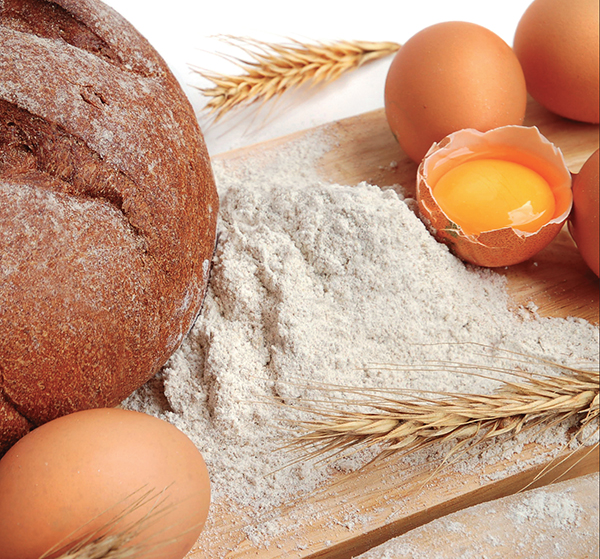
“The kitchen is a country in which there are always discoveries to be made.”
—Grimod de la Reyniere, 1758–1838
Baking Cakes, Pies, Cookies, and Other Desserts
Food Co-ops: Grocery Shopping in Community
Edible Wild Plants and Mushrooms
Bread has been a dining staple for thousands of years. The art of breadmaking has evolved over time, but the basic principles remain unchanged. Bread is made from flour of wheat or other grains, with the addition of water, salt, and a fermenting ingredient (such as yeast or another leavening agent). After you’ve baked a few loaves, you’ll start to get a feel for what the dough should look and feel like. Then you can start experimenting with different flours, or additions of fruits, nuts, seeds, herbs, and more.
Quick Breads
Muffins, banana bread, zucchini bread, and many other sweet breads are often leavened with agents other than yeast, such as baking soda or baking powder. These breads are easy to make and require far less preparation time than yeast breads. They’re also very versatile; once you master the basic recipe you can add almost any fruit, nut, or flavoring to make a uniquely delicious treat.
Basic Quick Bread Recipe
This basic recipe will make two loaves or twelve large muffins. Fold in 1 to 2 cups of mashed fruit, whole berries, nuts, or chocolate chips before pouring the batter into the pans.
• 3½ cups flour (use at least 2 cups of a gluten-rich flour)
• 2 teaspoons baking powder
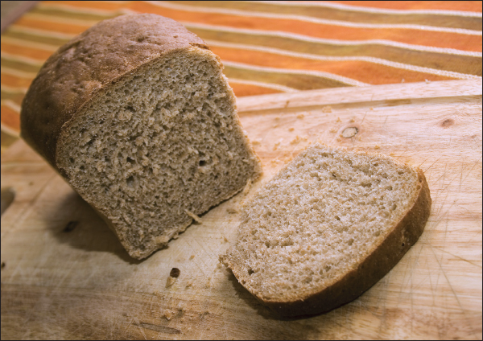
• 1 teaspoon baking soda
• 1 teaspoon salt
• 1 to 2 teaspoons spices or herbs, if desired
• 1¼ cups sugar
• ¾ cup butter, oil, or fruit puree
• 3 eggs
• ¾ cup milk
1. In a large mixing bowl combine all dry ingredients except sugar.
2. In a separate bowl, beat together sugar and butter, oil, or fruit puree. Add eggs and beat until light and fluffy.
3. Add butter and sugar mixture and milk alternately to the dry ingredients, stirring just until combined. Fold in additional fruit, nuts, or flavors of your choice.
4. For bread, pour into a greased bread pan and bake at 350°F for 1 hour. For muffins, fill muffin cups ⅔ full and bake at 350°F for 20 to 25 minutes.
Cinnamon Bread
• 2 eggs
• ½ cup butter
• 1 cup sugar
• ½ cup milk
• 1¼ cups flour
• 2½ teaspoons baking powder
• 1 teaspoon cinnamon
• 1 teaspoon butter, melted
• 2 tablespoons sugar and 2 tablespoons cinnamon, mixed together
1. Beat together the eggs, butter, and sugar until fluffy.
2. In a separate bowl, combine the dry ingredients. Add the dry mixture and the milk to the butter mixture and mix until combined.
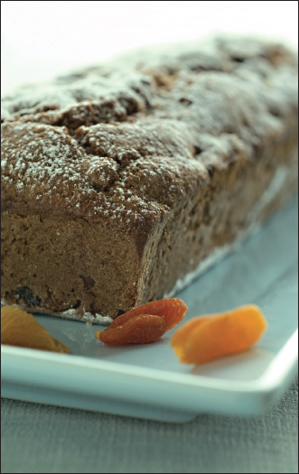
TIP
Baking powder is a mixture of baking soda, cornstarch, and cream of tartar in a 1:1:2 ratio. To make 1 teaspoon of baking powder, combine ¼ teaspoon baking soda, ¼ teaspoon cornstarch, and ½ teaspoon cream of tartar.
3. Bake in a greased bread pan at 300°F for almost an hour. When done pour melted butter over top and sprinkle with cinnamon and sugar mixture.
One-Hour Brown Bread
• 1 cup cornmeal
• 1 cup white flour
• ½ teaspoon salt
• 1 teaspoon baking soda
• 1 cup water, boiling
• 1 egg
• ½ cup molasses
• ½ cup sugar
1. Combine cornmeal, flour, and salt.
2. Add the baking soda to boiling water and stir. Add to dry ingredients.
3. Beat together egg, molasses, and sugar and add to dry ingredients. Mix until combined. Pour batter into an empty coffee can with a cover (or cover with foil).
4. Place a cake rack in the bottom of a dutch oven or large pot. Place the covered can on the rack and pour boiling water into the pot until it reaches half way up the can. Cover the pot, turn the unit on very low, and steam for one hour.
Cranberry Coffee Cake
• 2 tablespoons butter
• ¼ cup firmly packed brown sugar
• 1 cup cooked or canned cranberry sauce
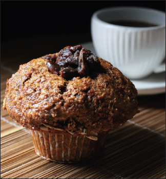
• ¼ cup pecans, chopped
• 1 tablespoon grated orange rind
• 1½ cups sifted flour
• 2 teaspoons, double acting baking powder
• ¼ cup sugar
• ⅓ cup shortening
• 1 egg, beaten
• ½ cup milk
1. Melt butter in 9-inch ring mold. Spread brown sugar over bottom of pan.
2. Combine cranberry sauce, pecans, and orange rind. Spread over brown sugar in bottom of pan.
3. Sift together flour, baking powder, and sugar.
4. Cut in shortening until dough resembles coarse meal. Combine egg with milk. Add all at once, mixing only to dampen flour. Turn into pan.
5. Bake at 400°F for 25 to 30 minutes. Cool 5 minutes and invert onto plate. Serve warm.
Date-Orange Bread
• 2 tablespoons butter or margarine, melted
• ¾ cup orange juice
• 2 tablespoons grated orange rind
• ½ cup finely cut dates
• 1 cup sugar
• 1 egg, slightly beaten
• ½ cup coarsely chopped pecan
• 2 cups sifted all-purpose flour
• ½ teaspoon baking soda
• 1 teaspoon baking powder
• ½ teaspoon salt
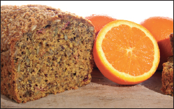
1. Combine first seven ingredients.
2. Mix and sift remaining ingredients; stir into wet mixture. Mix well, but quickly, being careful not to overbeat.
3. Turn into greased loaf pan. Bake in moderate oven, 350°F, for 50 minutes or until done. Remove from pan and let cool right side up, on a wire rack.
Pineapple Nut Bread
• 2¼ cups sifted flour
• ¾ cup sugar
• 1½ teaspoons salt
• 3 teaspoons baking powder
• ½ teaspoon baking soda
• 1 cup prepared bran cereal
• ¾ cup walnuts, chopped
• 1½ cups crushed pineapple, undrained
• 1 egg, beaten
• 3 tablespoons shortening, melted
1. Sift flour, sugar, salt, baking powder, and soda together.
2. Mix together remaining ingredients and combine with dry mixture.
3. Bake in greased loaf pan at 350°F for 1 ¼ hrs. This bread keeps moist a week or ten days, and slices best when a day or more old.
Date Muffins
• 1¾ cups sifted enriched flour
• 2 tablespoons sugar
• 2¼ teaspoons baking powder
• ¾ teaspoon salt
• ½ to ¾ cup coarsely cut pitted dates
• 1 egg, well-beaten
• ¾ cup milk
• ⅓ cup melted shortening or salad oil
1. Sift dry ingredients into mixing bowl and stir in dates. Make a well in center.
2. Combine egg, milk, and salad oil; add all at once to dry ingredients. Stir quickly only till dry ingredients are moistened.
3. Drop batter by tablespoons into greased muffin pans. Fill two-thirds full. Bake in oven, at 400ºF, for about 25 minutes. Makes one dozen.
Yeast Bread
Once you’ve made a loaf of homemade yeast bread, you’ll never want to go back to buying packaged bread from the grocery store. Homemade bread tastes and smells heavenly and the baking process itself can be very rewarding. Store homemade bread in a paper or resealable plastic bag and eat within a day or two for best results. Bread that begins to get stale can be cubed and made into stuffing or croutons.
Before you start baking, it’s helpful to understand the various components that make up bread.
Wheat is the most common flour used in bread making, as it contains gluten in the right proportion to make bread rise. Gluten, the protein of wheat, is a gray, tough, elastic substance, insoluble in water. It holds the gas developed in bread dough by fermentation, which otherwise would escape. Though there are many ways to make gluten-free bread, flour that naturally contains gluten will rise more easily than gluten-free grains. In general, combining smaller amounts of other flours (rye, corn, oat, etc.) with a larger proportion of wheat flour will yield the best results.
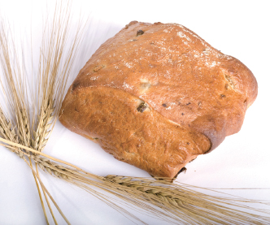
A grain of wheat consists of (1) an outer covering, or husk, which is always removed before milling; (2) bran, a hard shell that contains minerals and is high in fiber; (3) the germ, which contains the fat and protein content and is the part that can be planted and cultivated to grow more wheat; and (4) the endosperm, which is the wheat plant’s own food source and is mostly starch and protein. Whole wheat contains all of these components except for the husk. White flour is only the endosperm.
Yeast
Yeast is a microscopic fungus that consists of spores, or germs. These spores grow by budding and division, multiply very rapidly under favorable conditions, and produce fermentation. Fermentation is the process by which, under influence of air, warmth, and a fermenting ingredient, sugar (or dextrose, starch converted into sugar) is changed into alcohol and carbon dioxide.
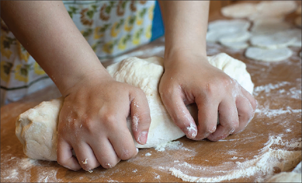
THE JUNIOR HOMESTEADER
The Grain Game
Play a “grain game” to learn about grain-based foods. Taste different foods made from grains and learn where grains are grown in the United States.
Materials Needed
• Food samples
• Paper cups, napkins, or paper towels
• Container of water
Goals
• To identify different foods made from grains.
• To expand the variety of foods eaten by tasting different kinds of foods made from grains.
• To identify where different grains are grown in the United States.
Key Concepts
• There are a wide variety of foods made from grains.
• Eating foods made from different grains adds a diversity of tastes to meals.
Preparation
Purchase foods that are made from the grains that will be discussed in this lesson. Examples of foods that might be purchased are: corn tortilla, rye bread, pumpernickel bread, oatmeal muffins or oatmeal cookies, and rice cakes. Additional breads you might consider including, if they are available, are:
scones—a British sweet biscuit
chapatis—a flat bread eaten in India and in East Africa
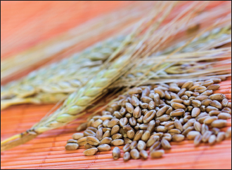
pita bread—a flat bread also known as “pocket bread”
lavash—a paper-thin Russian bread used for wrapping food
matzoh—a flat, cracker-like bread
corn bread—a bread made from cornmeal
Cut foods into bite-sized pieces.
Background
A grain is a single seed of a cereal grass. Some of the cereal grains grown in the United States are wheat, corn, rye, rice, barley, and oats. More foods are made with wheat than any other cereal grain.
Each grain tastes differently and adds delicious taste, nutrition, and variety to meals. Grain-based foods provide complex carbohydrates, which are an important source of energy for the body.
Grains also provide vitamins that help keep the body strong and healthy such as B vitamins, minerals such as iron, and dietary fiber, which keeps the digestive systems healthy. Grain products belong in the Breads, Cereals, Rice, and Pasta Group of the Food Guide Pyramid. The following are examples of grain-based foods categorized by their main grain ingredient.
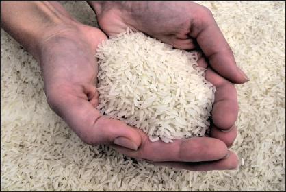
Wheat
white bread
wheat bread
noodles
spaghetti
biscuit
fry bread
flour tortilla
wonton wrapper
cracker
waffle
graham cracker
scone
pita bread
matzoh
pancake
crepe
cream-of-wheat cereal
wheat flakes
popover
couscous
tabbouleh
cake
Corn
corn bread
corn tortilla
popcorn
hominy
grits
corn flakes
cornmeal mush
hushpuppy
Oats
oatmeal
oatmeal cookie
oatmeal muffin
ready-to-eat oat cereal
granola
muesli
Rye
rye bread
rye flatbread
pumpernickel bread
rye crackers
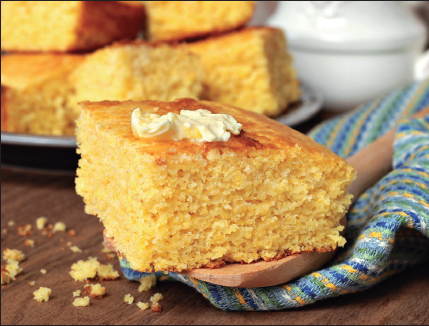
Rice
wild rice
white rice
basmati rice
texmati rice
jasmine rice
brown rice
Spanish rice
ready-to-eat rice cereal
risotto
sticky rice
rice noodles
rice cake
rice pudding
rice cereal (infant)
rice balls
popped wild rice
cream-of-rice cereal
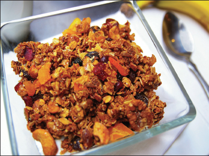
1. Tell children that they will be playing a game about grains.
2. Explain that before they begin the Grain Game they will first need to understand that a grain is a seed from a cereal grass. Some cereal grains grown in the United States for food are wheat, corn, rice, oat, and rye (barley and millet are also cereal grains but are used less often in the United States).
3. Divide the group into two teams. The group leader should moderate the game. First, explain to children how the game is played:
• The group leader will call out a type of grain (e.g., wheat, corn, rice, oats, rye).
• One team will begin the game by calling out a food made from that grain.
• The other team will respond by calling out a different food made from that grain.
• Each time a correct food is called out, that team gets 1 point. When a team calls out an incorrect food, that team will not get a point but the point will go to the other team.
• The teams will alternate calling out a different food until no more can be named.
• When no more can be named, the group leader calls out the name of a new grain and the game continues.
• Play rounds of this game until wheat, corn, rice, oats, and rye are covered.
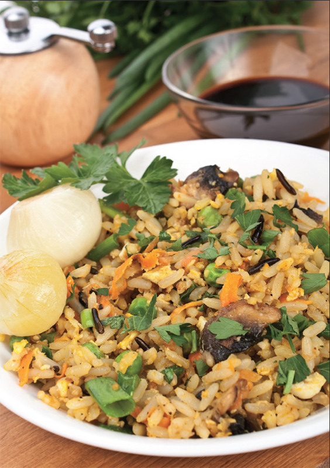
Game Closure
Suggested discussion questions following the game:
What foods made from grains do you eat now?
What new foods made from grains did you learn about today?
Which of the foods named today would you want to taste?
Tasting Activity
1. Tell the kids that now they are going to taste some foods made from different grains.
2. Have everyone wash their hands.
3. Have a volunteer distribute cups of water and paper plates or napkins. The water is for sipping between food samples.
4. Children should take a sample from each food plate, taste the food, and try to figure out which grain it’s made with. Have volunteers name each food and its grain ingredient.
5. Suggested discussion questions:
Which foods did you like best? Why?
Which were new to you?
Suggested discussion starters:
Name the states where grains are grown.
Where are most grains grown? Why?
How do the grains grown in the different states get to other parts of the country to be made into foods?
You can grind grains into flour at home using a mortar and pestle, a coffee or spice mill, manual or electric food grinders, a blender, or a food processor. Grains with a shell (quinoa, wheat berries, etc.) should be rinsed and dried before milling to remove the layer of resin from the outer shell that can impart a bitter taste to your flour. Rinse the grains thoroughly in a colander or mesh strainer, then spread them on a paper or cloth towel to absorb the extra moisture. Transfer to a baking sheet and allow to air dry completely (to speed this process you can put them in a very low oven for a few minutes). When the grains are dry, they’re ready to be ground.
Dry yeast is most commonly used for baking. Most grocery stores sell regular active dry and instant yeast. Instant yeast is more finely ground and thus absorbs the moisture faster, speeding up the leavening process and making the bread rise more rapidly.
Active dry yeast should be proofed before using. Mix one packet of active dry yeast with ¼ cup warm water and 1 teaspoon sugar. Stir until yeast dissolves. Allow it to sit for 5 minutes, or until it becomes foamy.
Making Bread
Making bread is a fairly simple process, though it does require a chunk of time. Keep in mind, though, that you can be doing other things while the bread is rising or baking. The process is fairly straightforward and only varies slightly by kind of bread.
Mix together the flour, sugar, salt, and any other dry ingredients. Form a well in the center and add the dissolved yeast and any other wet ingredients. Mix all the ingredients together.
Gather the dough into a ball and place it on a lightly floured surface. Flour your hands to keep the dough from sticking to your fingers. Knead the dough by folding it toward you and then pushing it away with the palms of your hands. Continue kneading for five to ten minutes, or until the dough is soft and elastic.
Place the dough in a lightly greased pan, cover with a dish towel, and allow to rise in a warm place until it doubles in size.
Punch the dough down to expel the air and place it in a greased and lightly floured baking pan. Cover and let rise a second time until it doubles in size.
Bake the bread in a preheated oven according to the recipe. Bread is done when it is golden brown and sounds hollow when you tap the top.
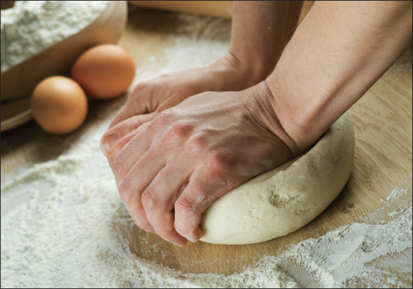
Remove bread from the pan by loosening the sides with a knife or spatula and tipping the pan upside down onto a wire rack.
Biscuits
Any bread recipe can be made into biscuits instead of one large loaf. To shape bread dough into biscuits, pull or cut off pieces, making them all as close to uniform in size as possible. Flour palms of hands slightly and shape each piece individually. Using the thumb and first two fingers of one hand, and holding it in the palm of the other hand, move the dough round and round, folding the dough towards the center. When smooth, turn it over and roll between palms of hands. Place in greased pans nearly together, brushed between with a little melted butter, which will allow biscuits to separate after baking.
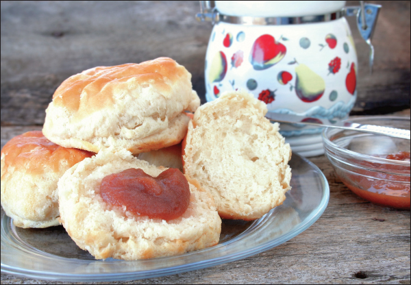
• 1 package active dry yeast = about 2 ¼ teaspoons = ¼ ounce
• 4-ounce jar active dry yeast = 14 tablespoons
• 1 (6-ounce) cube or cake of compressed yeast (also known as fresh yeast) = 1 package of active dry yeast
• Multiply the amount of instant yeast by 3 for the equivalent amount of fresh yeast.
• Multiply the amount of active dry yeast by 2.5 for the equivalent amount of fresh yeast.
• Multiply the amount of instant yeast by 1.25 for the equivalent of active dry yeast.
Multigrain Bread
• ¼ cup yellow cornmeal
• ¼ cup packed brown sugar
• 1 teaspoon salt
• 2 tablespoons vegetable oil
• 1 cup boiling water
• 1 package active dry yeast
• ¼ cup warm (105 to 115ºF) water
• ¼ cup whole wheat flour
• ¼ cup rye flour
• 2¼–2¾ cups all-purpose flour
1. Mix cornmeal, brown sugar, salt, and oil with boiling water; cool to lukewarm (105 to 115ºF).
2. Dissolve yeast in ¼ cup warm water; stir into cornmeal mixture. Add whole wheat and rye flours and mix well. Stir in enough all-purpose flour to make dough stiff enough to knead.
3. Turn dough onto lightly floured surface. Knead until smooth and elastic, about 5 to 10 minutes.
4. Place dough in lightly oiled bowl, turning to oil top. Cover with clean towel; let rise in warm place until double, about 1 hour.
5. Punch dough down; turn onto clean surface. Cover with clean towel; let rest 10 minutes. Shape dough and place in greased 9 x 5 inch pan. Cover with clean towel; let rise until almost double, about 1 hour.
6. Preheat oven to 375ºF. Bake 35 to 45 minutes or until bread sounds hollow when tapped. Cover with aluminum foil during baking if bread is browning too quickly. Remove bread from pan and cool on wire rack.
GLUTEN-FREE BREAD
Making good gluten-free bread isn’t always easy, but there are several things you can do to improve your chances of success:
• Choose flours that are high in protein, such as sorghum, amaranth, millet, teff, oatmeal, and buckwheat
• Use all room temperature ingredients. Yeast thrives in warm environments.
• Add a couple teaspoons of xantham gum to your dry ingredients.
• Add eggs and dry milk powder to your bread. These will add texture and help the bread to rise.
• Crush a vitamin C tablet and add it to your dry ingredients. The acidity will help the yeast do its job.
• Substitute carbonated water or gluten-free beer for other liquids in the recipe.
• If you’re following a traditional bread recipe, add extra liquid (water, carbonated water, milk, fruit juice, or olive oil) to get a soft and sticky consistency. The batter should be a little too sticky to knead. For this reason, bread machines are great for making gluten-free bread.
Oatmeal Bread
• 1 cup rolled oats
• 1 teaspoon salt
• 1½ cups boiling water
• 1 package active dry yeast
• ¼ cup warm water (105 to 115ºF)
• ¼ cup light molasses
• 1½ tablespoons vegetable oil
• 2 cups whole wheat flour
• 2–2½ cups all-purpose flour
1. Combine rolled oats and salt in a large mixing bowl. Stir in boiling water; cool to lukewarm (105 to 115ºF).
2. Dissolve yeast in ¼ cup warm water in small bowl.
3. Add yeast water, molasses, and oil to cooled oatmeal mixture. Stir in whole wheat flour and 1 cup all-purpose flour. Add additional all-purpose flour to make a dough stiff enough to knead.
4. Knead dough on lightly floured surface until smooth and elastic, about 5 minutes.
5. Place dough in lightly oiled bowl, turning to oil top. Cover with clean towel; let rise in warm place until double, about 1 hour.
6. Punch dough down; turn onto clean surface. Shape dough and place in greased 9 x 5 inch pan. Cover with clean towel; let rise in a warm place until almost double, about 1 hour.
7. Preheat oven to 375ºF. Bake 50 minutes or until bread sounds hollow when tapped. Cover with aluminum foil during baking if bread is browning too quickly. Remove bread from pan and cool on wire rack.
Raised Buns (Brioche)
• ½ cup milk
• ⅓ cup butter
• ¼ cup sugar
• ¾ teaspoon salt
• 1 package yeast (active, dry or compressed)
• ¼ cup lukewarm water
• 3 eggs, well-beaten
• 2½ cups enriched flour
• ¼ teaspoon lemon rind, or ⅛ teaspoon crushed cardamom seeds
1. Save 2 tablespoons egg to brush brioches before baking. Scald milk; stir in butter, sugar, and salt; cool to lukewarm. Sprinkle or crumble yeast into water in large bowl; stir to dissolve. Add lukewarm milk mixture and beaten eggs; mix well.
2. Sift flour; add 1 ½ cups of it to mixture and beat by hand 8 minutes or with electric mixer at medium speed for 3 minutes. Add remaining sifted flour and lemon rind; beat to smooth, heavy batter. Cover with towel; let rise in warm place 2 hours or until doubled. Stir down; cover tightly; chill at least 5 hours or overnight.
3. Stir down again. Mixture is soft now. Grease hands slightly, place dough on lightly floured board, and knead a few times. With sharp knife, cut off small pieces of dough. Roll with hands to about ½ inch in diameter, and about 10 inches long. Coil loosely in circle, winding around toward center. Top with small ball of dough. Cover with a towel and let rise ½ hour or until doubled. Brush with egg yolk beaten with 1 teaspoon water. Bake in oven 400°F for 12 to 15 minutes. For an extra touch, top with thin frosting while still warm. Makes 12 to 18 buns.
Family Taste Celebration
Many families use special foods for family gatherings and celebrations big and small. Take a few minutes to think about the special foods you prepare.
Encourage your child to explore his or her food heritage. Often, foods that were prepared as everyday foods many years ago have become today’s celebration foods. For example, great grandmom’s crumb cake, which she made every week, you may make once a year as part of a holiday breakfast. Or the homemade ravioli that was made weekly has been replaced by the store-bought variety. Suggest that your child talk to older family members about the foods they or their grandparents ate when they were younger.
Here are a few questions to get them started:
What countries did our relatives come from?___________________________________________
What recipes or foods did you eat when you were younger that can be traced back to these countries?___________________________________________
Do you have any recipes that have been handed down from generation to generation?___________________________________________
Discuss with your child what was discovered about his or her family food heritage. Discuss the family recipes and make a shopping list for one of these recipes. Have your child track down the ingredients when you go to the grocery store. Together with your child, prepare the recipe and enjoy a celebration of family history.
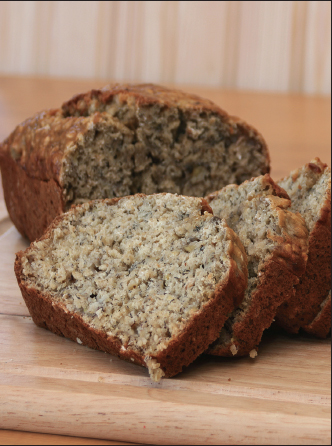
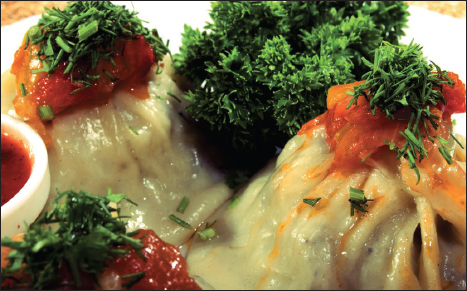
Bread in a Bag
Materials needed:
• A heavy-duty zipper-lock freezer bag (1 gallon size)
• Measuring cup
• Measuring spoons
• Cookie sheet
• Pastry towel or cloth
• 13 x 9-inch baking pan
• 8½ x 4½-inch glass loaf pan
Ingredients:
• 2 cups all-purpose flour, divided
• 1 package rapid rise yeast
• 3 tablespoons sugar
• 3 tablespoons nonfat dry milk
• 1 teaspoon salt
• 1 cup hot water (125ºF)
• 3 tablespoons vegetable oil
• 1 cup whole-wheat flour
1. Combine 1 cup all-purpose flour, yeast, sugar, dry milk, and salt in a freezer bag. Squeeze upper part of the bag to force out air and then seal the bag.
2. Shake and work the bag with fingers to blend the ingredients.
3. Add hot water and oil to the dry ingredients in the bag. Reseal the bag and mix by working with fingers.
4. Add whole-wheat flour. Reseal the bag and mix ingredients thoroughly.
5. Gradually add remaining cup of all-purpose flour to the bag. Reseal and work with fingers until the dough becomes stiff and pulls away from sides of the bag.
6. Take dough out of the bag, and place on floured surface.
7. Knead dough 2 to 4 minutes, until smooth and elastic.
8. Cover dough with a moist cloth or pastry towel; let dough stand for 10 minutes.
9. Roll dough to 12 x 7-inch rectangle. Roll up from narrow end. Pinch edges and ends to seal.
10. Place dough in a greased glass loaf pan; cover with a moist cloth or pastry towel.
11. Place baking pan on the counter; half fill with boiling water.
12. Place cookie sheet over the baking pan and place loaf pan on top of the cookie sheet; let dough rise 20 minutes or until dough doubles in size.
13. Preheat oven, 375ºF, while dough is rising (about 15 minutes).
14. Place loaf pan in oven and bake at 375ºF for 25 minutes or until baked through.
Baking Cakes, Pies, Cookies, and Other Desserts
There is something uniquely satisfying and comforting about baking. To start with ingredients as plain as flour, eggs, and sugar and end up with a rich cake, soft and gooey cookies, or a heaping pie can seem like a small miracle. Try your hand at some of these classic desserts, or use them as inspiration for creating your own recipes.
Cakes
Yellow Layer Cake
• ½ cup butter
• 1½ cups sugar
• 4 eggs, separated
• 2 cups flour
• 2 teaspoons baking powder
• ½ teaspoon baking soda
• ¾ cup sweet milk
• 1 teaspoon vanilla
1. Cream butter thoroughly, add sugar gradually, and cream together until light and fluffy. Add eggs yolks and beat well.
2. Sift flour, baking powder, and baking soda together and add alternately with milk, beating after each addition until smooth. Add vanilla and fold in stiffly beaten egg whites.
3. Bake in two greased layer pans in 350°F oven about 25 minutes.
Chocolate Cake
• 4 ounces unsweetened baking chocolate
• 1½ cups sugar, divided
• 1½ cups milk, divided
• 2 teaspoons vanilla
• ½ cup butter
• 2 cups flour
• 1 teaspoon baking soda
• ¼ teaspoon salt
• 2 eggs, beaten
TIP
Buttermilk can be made by combining 1 cup milk with 1 teaspoon vinegar. Stir and let sit for 3 to 5 minutes.
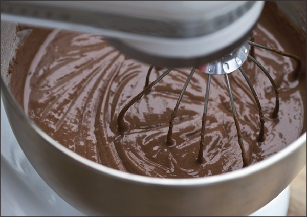
1. Melt chocolate in a saucepan over low heat. Add ½ cup sugar, 1 cup milk, and vanilla.
2. In a mixing bowl, cream butter and 1 cup sugar. Sift together flour, baking soda, and salt.
3. Add eggs and remaining ½ cup milk alternately with dry ingredients to the chocolate mixture.
4. Bake in two greased layer pans at 350°F about 25 minutes.
Banana Layer Cake
• 2½ cups cake flour
• 1 teaspoon baking soda
• ½ teaspoon baking powder
• ¾ cup butter or shortening
• 1½ cups sugar
• 2 eggs
• ¼ cup buttermilk
• 1 teaspoon vanilla
• 1¼ cups ripe bananas (mashed)
1. Sift flour with soda and baking powder.
2. Cream butter and sugar together until light and fluffy. Add the whole eggs, beating well after the addition of each.
3. Add buttermilk and vanilla to bananas.
4. Add alternately the flour and banana mixture to butter mixture, beginning and ending with the dry ingredients. Beat until smooth and well blended.
5. Divide evenly into two 9-inch greased cake pans (lightly floured). Bake 25 to 30 minutes at 350°F.
Cherry-nut Cake
• 2 cups flour
• 1 cup sugar
• 2 teaspoons baking powder
• ¼ teaspoon salt
• 2 eggs
• ½ cup milk
• ½ cup butter
• 1 teaspoon vanilla
• 1 cup maraschino cherries, chopped
• ½ cup walnuts, chopped
1. Sift together flour, sugar, baking powder, and salt. In a separate bowl, beat together eggs, milk, butter, and vanilla.
2. Add dry ingredients to wet ingredients and mix until combined. Add cherries and walnuts and stir.
3. Bake in two greased and floured cake pans at 350° for 20 to 30 minutes. Frost as desired.
Applesauce Cake
• 1⅔ cups flour
• 1 teaspoon baking soda
• ½ teaspoon salt
• ½ teaspoon cloves
• 1 teaspoon cinnamon
• 1 teaspoon nutmeg
• 1 cup brown sugar
• ½ cup butter
• 1 cup unsweeetened applesauce
• 1 cup raisins or nuts, chopped
1. Sift together flour, baking soda, salt, and spices.
2. In a separate bowl, beat together sugar and butter until light and fluffy. Add applesauce and continue to mix until combined.
3. Add dry ingredients to wet ingredients and mix until combined. Add raisins or nuts (if desired) and stir until combined.
4. Bake in a greased loaf pan for 1 hour at 350°F. Allow to sit in oven for 10 minutes more with heat off.
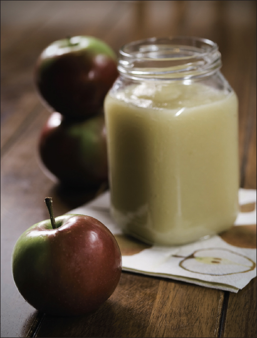
Fruit Cake
• 2½ cups sifted flour
• 1 teaspoon baking powder
• 1 pound candied pineapple
• ¼ pound citron
• 1 pound raisins
• 1 pound candied cherries
• ½ cup butter
• ¾ cup sugar
• 3 eggs, beaten
• ½ teaspoon baking soda dissolved in 1 teaspoon hot water
• ¾ cup buttermilk
• 1 pound coconut
• ½ cup blanched almonds
1. Sift together flour and baking powder.
2. Cut the fruit into small pieces. If citron and pineapple are too heavily coated with sugar, either wash or scrape the sugar off. Sprinkle with some of flour mixture and work in.
3. Cream butter and sugar, add eggs, and beat until light and fluffy. Add other ingredients and mix with a spoon, adding fruit and nuts last.
4. Use two bread tins well greased. Set them on shelf halfway up in oven and bake at 275 to 300°F for 1 ½ to 2 hours. The cake should be light brown on top when done. For smaller cakes use small pans. Four or five small bread tins (7 ½ x 3 ½ inches) work nicely, and make nice Christmas gifts. If desired, a small amount of brandy added to the batter gives it an excellent flavor.
Christmas Cupcakes
• 1½ cups seedless raisins
• ½ cup nuts of your choice
• 1 tablespoon grated orange rind
• ½ cup butter
• 1 cup sugar
• 2 eggs, slightly beaten
• 2 cups sifted flour
• ½ teaspoon salt
• ½ teaspoon vanilla
• 1 teaspoon baking soda
• 1 cup buttermilk
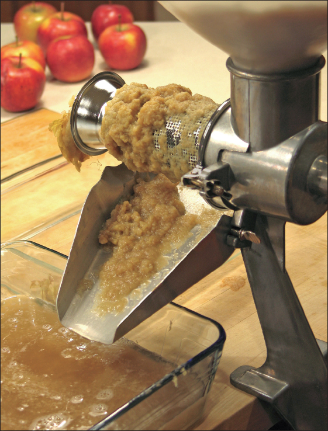
Glaze
• ¼ cup sugar
• 3 tablespoons orange juice
1. Chop or grind raisins and nuts together. Add orange rind.
2. Cream butter and sugar together until light and fluffy; add eggs.
3. Mix flour and salt. Add vanilla and baking soda to buttermilk.
4. Add flour and liquid to butter mixture alternately, stirring well after each addition. Fold in raisin mixture.
5. Fill 3-inch greased and floured muffin pans two-thirds full. Bake in moderate oven at 350°F for 40 to 50 minutes. Meanwhile, make the glaze. Mix sugar with orange juice, and let stand 30 minutes.
6. Cool cupcakes for 5 minutes. before removing from pans. Dip top of each warm cupcake in glaze. Makes about 18.
Gingerbread
• 2 eggs
• ¾ cup sugar
• ½ cup butter, melted
• 1 cup molasses
• 2½ cups sifted flour
• 1 teaspoon salt
• 1 teaspoon cinnamon
• 1 teaspoon ginger
• ½ teaspoon cloves
• 2 teaspoons baking soda
• 1 cup boiling water
1. Beat eggs well and gradually add sugar. Add melted butter and molasses and mix well.
2. Combine flour, salt, cinnamon, ginger, cloves, and baking soda. Add flour mixture to egg mixture. Mix well. The batter will be stiff.
3. Add 1 cup boiling water and stir until smooth.
4. Bake in greased and floured 9 x 12 ½-inch pan 350°F about 40 minutes.
Spice Cake
• ⅓ cup butter
• 1 cup brown sugar
• 2 eggs (save 1 white for meringue)
• 1¾ cups flour
• ¾ teaspoon baking soda
• 1 teaspoon salt
• ½ teaspoon cloves
• ¼ teaspoon ginger
• 1 teaspoon cinnamon
• ¼ teaspoon nutmeg
• ¾ cup sour milk
CAKE TROUBLES
If the cake doesn’t rise enough, the problem may be:
• You didn’t use enough leavening. Use the type called for, and measure exact amount.
• The cake was baked in too long a pan.
• The oven was too hot for proper rising.
If the cake falls, the cause may be:
• Too much shortening.
• Too much leavening.
• Too much liquid.
• Too much sugar.
• The cake baked too long or at too low a temperature.
• You tried to remove the cake from the pan before it cooled.
If the top of the cake gets crusty, the cause may be:
• The oven was too hot.
• The cake baked too long.
1. Beat together butter, sugar, salt, and eggs.
2. Sift together flour, baking soda, salt, and spices. Add flour mixture alternately with milk into first mixture.
3. Pour into shallow 8 ½-inch square pan that has been greased and lightly dusted with flour. Bake at 350°F for 40 minutes.
Boiled Butterscotch Frosting
• 2 cups brown sugar
• 1 cup granulated sugar
• 1 cup sour cream or milk
• 1 tablespoon butter
• 1 teaspoon vanilla
1. Combine first three ingredients in a saucepan and boil until the mixture forms a soft ball when a small amount is dropped in a glass of water.
2. Add butter and vanilla, remove from heat, and beat until creamy.
Sea Foam Icing
• 1½ cups brown sugar
• ⅓ cup water
• 2 egg whites, unbeaten
• ⅛ teaspoon cream of tartar
• 1 teaspoon vanilla
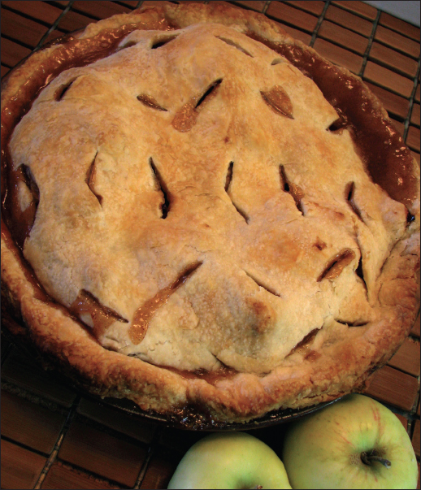
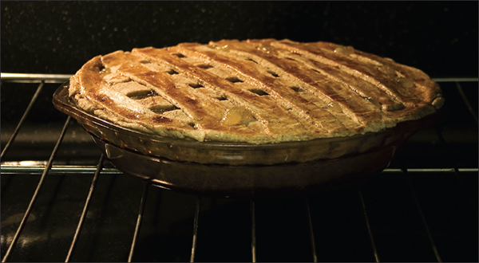
1. Boil sugar and water for 3 minutes. Cool slightly.
2. Put egg whites and cream of tartar into mixing bowl and beat on high. Immediately add the hot syrup. Beat for 5 minutes and add vanilla.
Pies
Easy Pie Crust
This recipe will make enough dough for one double-crust or two single-crust pies.
• 2½ cups all-purpose flour
• 1 cup salted butter
• 4 to 8 tablespoons ice water
1. Combine flour and butter in a food processor and pulse until mixture resembles coarse crumbs.
2. Add ice water, 1 tablespoon at a time, pulsing between each addition. As soon as the dough clings together, form into two balls.
3. Roll dough to ¼-inch thickness on a floured cutting board. Dust dough with flour as needed to keep it from sticking to the rolling pin. If not using the dough immediately, cover the balls of dough with plastic wrap and refrigerate until ready to use.
Lemon Meringue Pie
• 1¼ cups cold water
• 4 level tablespoons cornstarch
• 1 cup sugar + 6 tablespoons sugar, divided
• 1 tablespoon flour
• 3 eggs, separated
• 1 grated lemon rind
• 3 to 4 tablespoons lemon juice
• 1 tablespoon butter
• pinch salt
• 1 9-inch baked pie shell (see Easy Pie Crust)
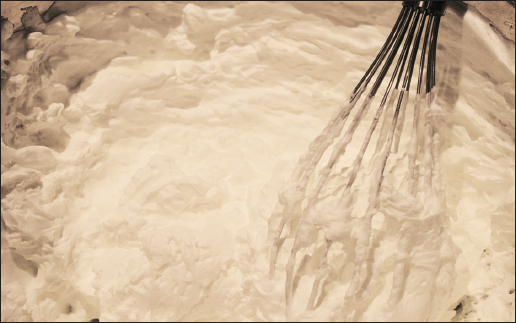
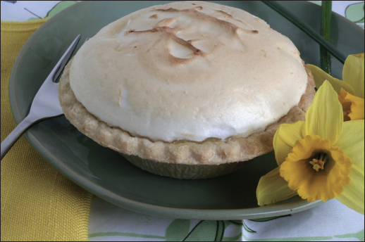
1. Preheat oven to 350° F.
2. Mix cornstarch with cold water. In a saucepan, whisk together 1 cup sugar, flour, and cornstarch mixture. Cook the mixture on top of a double boiler until thick.
3. In a bowl, whisk 3 egg yolks. Gradually combine the mixture with the egg yolks. Add grated rind of lemon, lemon juice, butter, and salt. Continue to cook the mixture, stirring constantly until thick.
4. Remove from heat and pour filling into baked pie shell.
5. In a bowl, whip 3 egg whites while gradually adding 6 tablespoons sugar. Spread meringue on top of filling evenly. Bake pie at 325°F about 15 minutes or until meringue is golden brown.
6. Remove from oven and allow the pie to cool before serving.
Open Blueberry Pie (No Bake)
• 2 cups blueberries (Canned berries may be used. Drain and measure juice. Use juice instead of water.)
• 1 cup sugar
• 1 cup water
• 3 tablespoons tapioca
• pinch salt
• Cream, whipped
Cornflake crust:
• ¼ pound butter
• 4 or more cups of crushed cornflakes
1. Melt butter in a bowl. Add 4 or more cups of crushed cornflakes to bowl. Stir gently and press mixture into pie plate.
2. Chill crust until cold and set.
PREBAKING A PIE SHELL
Many of these recipes call for a baked pie shell. To prebake, or “blind bake” a pie crust, roll it out and place it in the pie plate. Line the crust with parchment paper and sprinkle dried beans or rice on top. This will keep the crust from getting puffy. Bake at 425°F for about 20 minutes. Remove beans or rice and parchment paper and the crust will be ready to fill.
3. Put blueberries, sugar, water, tapioca, and salt into a saucepan and cook, stirring constantly, until thickened.
4. Cool mixture and pour it into the chilled crust. Chill pie until ready to serve.
5. Cover pie with whipped cream before serving.
Coconut Bavarian Pie
• 1 envelope unflavored gelatin
• ¼ cup cold water
• 1 cup milks
• 3 eggs, separated
• ½ cup granulated sugar, divided
• ¼ teaspoon salt
• 1 cup heavy cream, whipped
• 1 teaspoon vanilla
• ½ cup shredded coconut
• 1 9-inch baked pie shell (see Easy Pie Crust)
1. Soften gelatin in cold water.
2. Scald milk in double boiler.
3. Combine egg yolks and ¼ cup sugar; stir in milk. Return to double boiler; cook over hot (not boiling) water, until custard coats spoon.
4. Stir in gelatin until dissolved. Refrigerate until it is as thick and syrupy as unbeaten egg white.
5. Beat egg whites with salt till quite stiff. Fold in custard mixture, then whipped cream, vanilla, and coconut.
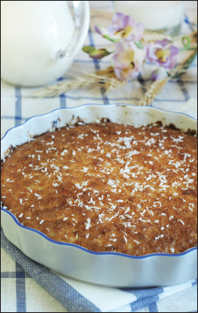
6. Pour into baked pie shell. Refrigerate until set.
Peach Chiffon Pie
• ¼ cup flour
• 1 cup sugar, divided
• 1¼ cups canned peaches, crushed
• ½ cup orange juice
• 3 egg whites
• 1 9-inch baked pie shell
1. Mix flour with ½ cup sugar. Add crushed peaches. Cook in double boiler until thick. Remove from heat; add orange juice. Beat egg whites until stiff, beating in remainder of sugar gradually. Fold in peach mixture and pack lightly into baked crust. Bake in a moderate oven at 325°F until firm, about 30 minutes. Chill until serving.
Chocolate Chiffon Pie
• 2 1-ounce squares unsweetened chocolate
• ½ cup boiling water
• 1 tablespoon (1 envelope) unflavored gelatin
• ¼ cup cold water
• 4 eggs, separated, whites stiffly beaten
• 1 cup sugar, separated
• ¼ teaspoon salt
• 1 teaspoon vanilla
• ½ cup sugar
• 1 9-inch baked pie shell
• Cream, whipped
1. Melt chocolate in boiling water. Soften gelatin in cold water and add to chocolate; stir until gelatin dissolves.
2. Add egg yolks, beaten lightly with ½ cup sugar. Add salt and vanilla.
3. Beat remaining ½ cup sugar into egg whites. Fold into chocolate mixture; pour into pie shell. Top with whipped cream.
Pumpkin Chiffon Honey Pie
• 1 tablespoon unflavored gelatin
• ¼ cup cold water
• 3 eggs, separated
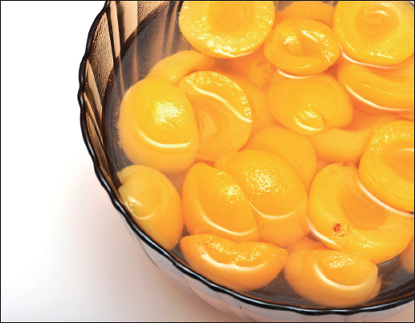
• ¾ cup honey
• 1½ cups canned pumpkin
• ½ cup milk
• ½ teaspoon salt
• 1 teaspoon cinnamon
• 3 tablespoons sugar
• 1 9-inch baked pie shell
1. Soak gelatin in cold water for 5 minutes.
2. Beat egg yolks and combine with honey, pumpkin, milk, salt, and cinnamon in top of double boiler. Cook until thick, stirring constantly, about 8 to 10 minutes. Add softened gelatin and stir until dissolved.
3. Beat egg whites until frothy; add sugar gradually, and continue beating until whites stand in soft peaks. Fold meringue into pumpkin mixture. Fill pie shell. Chill several hours.
Apple Crumb Pie
• 6 cups peeled, sliced apples
• 1 9-inch pastry shell, unbaked
• ⅓ cup sugar
• 1 teaspoon cinnamon
Crumb topping:
• ⅓ cup sugar
• ½ cup flour
• 4 tablespoons butter (chilled)
Place apple slices in the pie shell. Combine cinnamon and sugar and pour evenly over the apples. Combine crumb topping ingredients, rubbing together with your fingers until crumbly. Sprinkle topping evenly over the pie. Bake at 450°F for 10 minutes; reduce heat to 375°F and bake 30 minutes or until apples are tender.
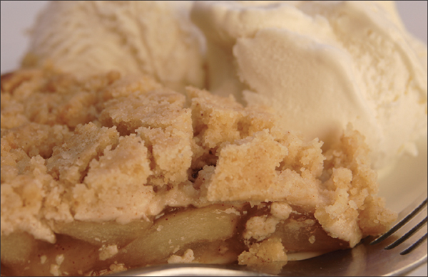
• Keep an apple in your brown sugar. Store the pair in a tightly closed container and the sugar will stay soft and moist.
• Roll out your pastry dough on waxed paper. Use a sponge to dampen the work surface before placing the paper on it. Dust the paper with flour and draw a circle in the flour slightly larger your pie pan. Once the pastry is rolled to the size of your circle, pick up the paper and pastry, flip it upside down into your pan, and then pull the paper away from the crust.
• Run a measuring cup under hot water for a few seconds before using it to measure honey, oil, nut butters, etc.
• Never grease the cake pan when making sponge, angel food, or chiffon cakes. For other sorts of cakes, greasing the pan will help the cakes to rise evenly and slide out of the pan without falling part.
• To tell if a cake is done, stick a sharp knife into the center and pull it out. If the knife is dry, the cake is done.
• To easily peel peaches or plums for use in pies, dip them in boiling water for a few seconds. The peels will slide right off.
• Leftover pie dough can be slathered with butter and jam, rolled into a log, and then cut in slices and baked until golden.
• To prevent the bottom pie crust from getting soggy from berries or other juicy fruits, brush the crust with an egg white. You can also brush the top crust with egg white to create a golden glaze.
• Pie crusts roll out best when the dough is kept cold. To this end, you can substitute a bottle filled with ice water for the rolling pin.
• To make cookies soft and chewy, pull them out of the oven while the centers are still slightly gooey. Allow to cool on the pan for a few minutes, and then move to a cooling rack.
• Most cookie dough can be stored in the freezer for up to three months. Thaw in the refrigerator before using.
• To make egg whites stiffen more quickly, add a pinch of salt before beating.
• When separating eggs, if a bit of egg yolk slips into the whites, moisten a cloth with cold water and touch it to the yolk. The yolk will stick to the cloth.
Ginger Cookies
• ¾ cup butter
• 1 cup white sugar
• 4 tablespoons molasses
• 1 egg
• 2 cups flour
• 2 teaspoons baking soda
• ⅛ teaspoon salt
• 1 teaspoon cinnamon
• ½ teaspoon cloves
• 1 teaspoon ginger
1. Beat together butter and sugar until light and fluffy. Add molasses and egg and continue to beat until thoroughly combined.
2. In a separate mixing bowl, combine dry ingredients. Add dry ingredients to wet ingredients and mix until well combined.
3. Chill dough for at least an hour, then roll into small balls. Roll in sugar. Place on cookie sheet 2 to 3 inches apart. Do not flatten them out. Bake at 350°F for 10 minutes.
Chocolate Brownies
• ½ cup butter
• 2 blocks (2 ounces) baking chocolate, melted
• 1 cup sugar
• 3 eggs, well-beaten
• ¾ cup flour
• ½ teaspoon baking powder
• ½ teaspoon salt
• 1 teaspoon vanilla
• 1 cup walnuts, chopped
1. Cream butter, add melted chocolate, and beat together.
2. In a separate bowl, combine sugar and eggs and add to chocolate mixture.
3. Sift flour, baking powder, and salt together and add to wet ingredients, beating thoroughly. Add vanilla and nuts.
4. Pour into a greased, shallow square pan. Bake in oven at 350°F for 20 to 25 minutes. Cut into squares while warm.
Date Bars
• 3 eggs
• 2 cups dates, chopped
• 1 cup nuts
• 1 teaspoon vanilla
• ¾ cup sugar
• 1 cup flour
• 2 teaspoons baking powder
1. Beat eggs until frothy. Add dates, nuts, sugar, and vanilla.
2. Sift flour and baking powder and add to first mixture.
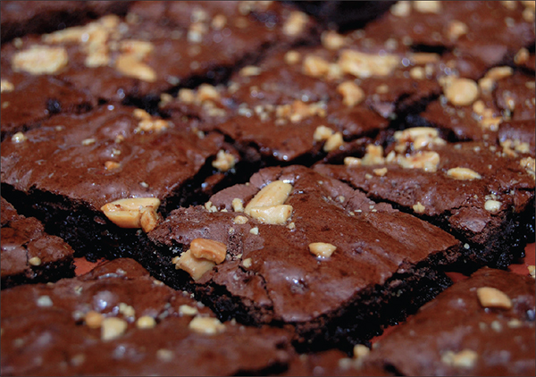
3. Bake in shallow pan at 325°F for 45 minutes. Cut into squares.
Chocolate Pinwheel Cookies
• ½ cup butter
• ¾ cup sugar
• 1 teaspoon vanilla
• 1 egg
• 1¼ cups sifted flour
• ¼ teaspoon baking powder
• ¼ teaspoon salt
• 1 square unsweetened chocolate (melted)
1. Cream butter and sugar until light and fluffy. Add vanilla and egg; beat until light.
2. Add sifted dry ingredients. Halve dough and add chocolate to one half. Chill several hours.
3. Roll white dough on waxed paper to form a 9 x 12-inch rectangle. Roll out chocolate dough to same size on waxed paper.
4. Invert chocolate dough onto white dough, pull off paper, and press gently with rolling pin. Roll tightly, wrap in paper, and chill thoroughly. Slice roll into ⅛-inch-thick cookies. Bake 10 minutes at 350°F.
Raisin Penny-pinchers
• ¾ cup soft butter
• 1 cup brown sugar
• 2 eggs, unbeaten
• ½ cup undiluted evap. milk
• 2 cups sifted flour
• ½ teaspoon salt
• 2 cups rolled oats
• ½ cup nuts, chopped
• 1 cup seedless raisins
• 1 teaspoon grated lemon rind
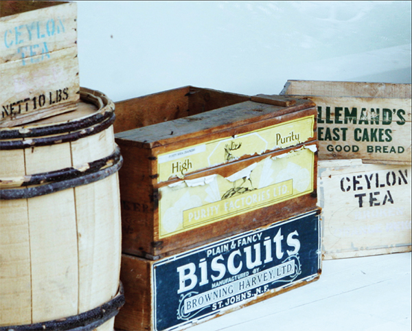
1. Cream butter and sugar until light and fluffy. Add eggs and blend well.
2. Add milk, flour, and salt and stir until blended.
3. Add remaining ingredients and mix thoroughly.
4. Drop by level tablespoons onto a well-greased cookie sheet. Bake for 8 to 10 minutes at 375°F. Makes 60 cookies.
German Christmas Cookies
• 1 cup butter or margarine
• 2 cups sugar
• 3 eggs
• 1 teaspoon vanilla
• 6 tablespoons milk
• About 6 cups flour, enough to make stiff dough
• 1 tablespoon anise seed
1. Cream together butter and sugar till very smooth. Add eggs (well beaten). Work in vanilla and milk and sifted flour alternately. Add anise seeds and mix. Dough must be stiff to roll easily. Roll very thin, and cut with fancy cutters. Bake at 350°F till delicate brown (about 10 minutes).
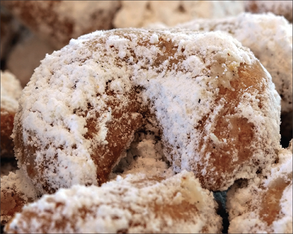
Cider doughnuts are a fall treat often found at apple orchards or farm stands. They’re delicious with a cup of coffee or hot chocolate, and kids will have fun helping to cut out the dough and rolling the finished doughnuts in sugar.
• ½ cup granulated sugar
• ½ cup brown sugar
• 4 tablespoons butter, softened
• 2 large eggs
• 1 cup apple cider, boiled down until it is reduced to about ⅓ cup
• ½ cup buttermilk
• 1 teaspoon vanilla
• 2 ½ cups all-purpose flour
• 1 cup whole wheat flour
• 2 teaspoons baking powder
• 1 teaspoon baking soda
• ½ teaspoon cinnamon
• ½ teaspoon salt
• ⅛ teaspoon ground nutmeg
• ⅛ teaspoon cloves
• 1 medium apple, peeled and finely chopped
• canola oil for frying
• extra cinnamon and sugar or powdered sugar for dusting
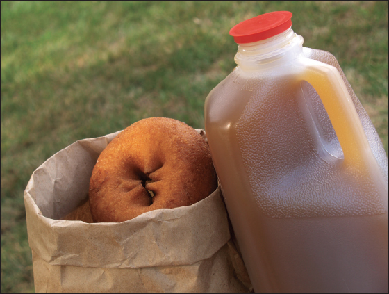
1. Beat the sugar and butter until light and fluffy. Add the eggs and continue beating until smooth. Then add the reduced cider, buttermilk, and vanilla.
2. In a separate bowl, combine remaining dry ingredients. Add the wet ingredients to the dry and stir just until combined. Fold in chopped apple.
3. Cover the dough and allow to chill for about an hour.
4. Divide the dough in half, knead on a lightly floured surface for about a minute, and then roll out to a ½-inch thickness, using more flour if the dough is sticky. Use a doughnut cutter to cut out the shapes, adding any dough scraps to the second piece of dough and repeating.
5. Pour oil into a large pot until it is about 3 inches deep. Heat oil to 350°F. Drop several doughnuts in and allow to cook for 2 minutes on each side, using a slotted spoon or tongs to flip the doughnuts. When doughnuts are golden brown, transfer to a cooling rack covered with paper towel.
6. Once doughnuts are cool, roll lightly in cinnamon and sugar or powdered sugar.
Swedish Heirloom Cookies
• 1 cup butter
• 1 cup confectioner’s sugar
• ½ teaspoon salt
• 1¼ cups almonds, ground
• 2 cups sifted flour
• 1 tablespoon water
• 1 tablespoon vanilla
1. Cream butter. Gradually add confectioner’s sugar and salt, creaming well. Add ground almonds, blend in sifted flour gradually, and mix thoroughly. Add water and vanilla, mixing thoroughly with fork. Shape into balls or crescents using 1 level tablespoon of dough for each cookie. Place on ungreased baking sheet. Flatten slightly. Bake at 350°F for 10 minutes. Roll in confectioner’s sugar while still warm.
Brazil Nut Shortbreads
• 1 cup butter
• ½ cup sugar
• 2 cups flour
• 1 cup Brazil nuts, sliced chunks, plus additional for decorating top of cookies
1. Cream butter and sugar well. Add flour and nuts and mix well. Chill dough for at least an hour and then shape cookies with hands into balls the size of a small walnut. Flatten and press a chunk of nut into the center of each cookie. Bake on an ungreased cookie sheet 15 to 20 minutes at 300°F. Makes 4 to 5 dozen.
Granola
Granola is as delicious and satisfying as it is healthy. Make this recipe your own by adding your favorite dried fruits, nuts, and seeds. Carob or chocolate chips can also be added for a more decadent treat.
• 3 cups oats
• ⅓ cup wheat germ
• 2 teaspoons cinnamon
• 1 teaspoon salt
• ¼ cup brown sugar
• ¼ cup vegetable oil
• ½ cup honey
• ¼ cup molasses
• 1 teaspoon vanilla
• ⅔ cup nuts or seeds
• ⅔ cup dried fruit
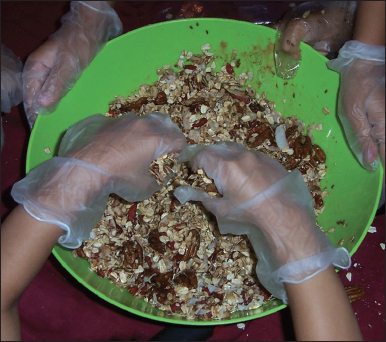
1. Preheat oven to 325ºF and line a baking sheet with parchment paper.
2. Combine the oats, wheat germ, cinnamon, salt, and brown sugar in a medium bowl.
3. In a separate bowl, combine the honey, molasses, vegetable oil, and vanilla. Pour over the oat mixture and stir until oats are thoroughly coated.
4. Spread mixture on cookie sheet and bake for 10 minutes. Remove pan from oven, stir the granola, add nuts, and bake for another 10 minutes or until granola begins to brown.
5. Remove from oven, stir in fruit, and store in an airtight container.
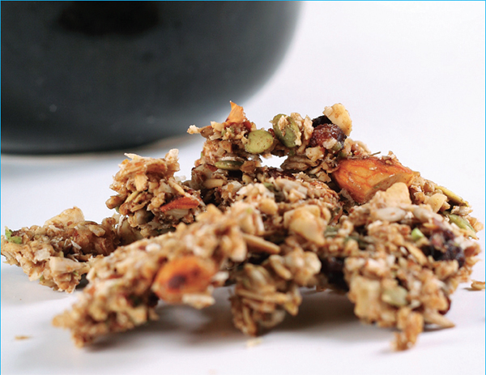
Why Eat Organically Grown Food?
Organically grown produce is becoming more and more readily available, regardless of where you live. If you grow your own fruits and vegetables or have ready access to a farmers’ market, eating organically may be cheaper than purchasing commercially grown produce at the supermarket. Though organic foods bought at a grocery store may be 10 to 50 percent more expensive than their traditionally grown companions, the benefits are often worth the cost. Here are just a few of many reasons to eat organically grown produce:
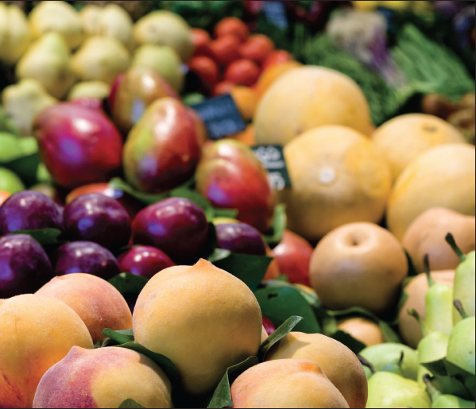
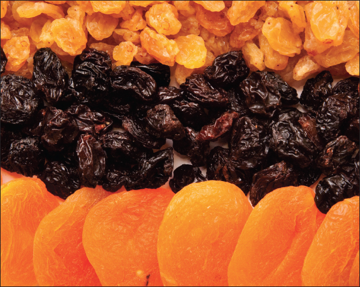
• Improved taste. Tests comparing various gardening methods have shown that fruit grown organically has a higher natural sugar content and firmer flesh, and is less apt to bruise easily. Do your own taste test and you’ll easily tell the difference!
• Fewer health risks. Pesticides have been linked to cancer and other diseases.
• Help support smaller farms. Most organic farms are small, family-owned endeavors. By purchasing organic produce, you’ll be helping them survive and thrive.
• Help the environment. According to the EPA (Environmental Protection Agency), agriculture is responsible for 70 percent of the pollution in the United States’ streams and rivers. Organic farmers don’t use the synthetic pesticides and fertilizers that cause this pollution.
• Better nutrition. Higher levels of lycopene, polyphenols, and flavonols have been found in organically produced fruits and vegetables. Phytonutrients (many of which are antioxidants involved in the plant’s own defense system) may be higher in organic produce because crops rely more on their own defenses in the absence of regular applications of chemical pesticides.
Why Eat Locally Grown Food?
Even if you grow the majority of your own produce, you may want to supplement your menu with food from other sources. When doing so, there are lots of great reasons to choose foods grown near where you live. Here are a few:
• Support the local economy. According to a study by the New Economics Foundation in London, a dollar spent locally generates twice as much income for the local economy.
• Fresher food. Produce you buy at the supermarket has likely been in transit for several days or even weeks, and during that time it’s been declining in flavor and nutrition. Produce you buy from a farmers’ market or local farm stand was likely picked the same day.
• Help the environment. By eating food grown locally, you’re cutting down on the number of miles it had to travel to get to you, thus lowering fuel emissions.
• Stay attuned to the seasons. Eating locally means that you may not get asparagus in October or sweet potatoes in April, but those foods will not be at their best quality in those months anyway. You’ll get more nutritious, better tasting food if you eat it at its growing peak. You’ll also feel more connected to the natural seasonal rhythms.
• Encourage variety. By supporting the local farmers, you give them the opportunity to try less common or heirloom varieties that wouldn’t travel as well, produce as high a yield, or have the shelf life of most supermarket varieties.
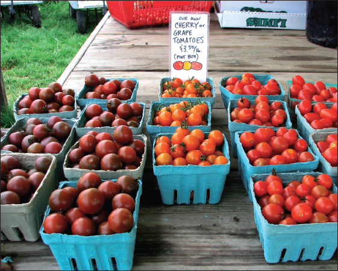
Food Co-ops: Grocery Shopping in Community
What Is a Food Co-op?
Food co-ops are non-profit, democratic, and member-owned businesses that provide low-cost organic or natural foods to members and, in some cases, non-members.
Since food co-ops are established and operated by members, each member has a voice regarding what types of foods will be sold, maintenance issues, and management of the stores. Food co-ops are democratically run, so each member has one vote in any type of election. Members generally elect a board of directors to oversee the everyday running of the co-op and to hire staff.
What Are the Different Types of Food Co-ops?
Typically, there are two types of food co-ops: the co-op grocery store and the buying club. Each is owned and run by members but they do vary in their structure and number of members.
Co-op Grocery Store
Co-op grocery stores are basically regular grocery stores that are member-owned and -operated and provide low cost, healthy foods to members and often to the public as well. There are around 500 co-op grocery stores in the United States alone.
Buying Club
A buying club consists of a small group of people (friends, neighbors, families, or colleagues) who get together and buy food in bulk from a co-op distributor (a co-op warehouse or natural foods distributor) or from local farms. By ordering in bulk, the members are able to save money on grocery items. The members of the buying club share the responsibilities of collecting money from the other members, placing orders with the distributor, picking up the orders from the drop-off site, and distributing the food to the individual members or families.
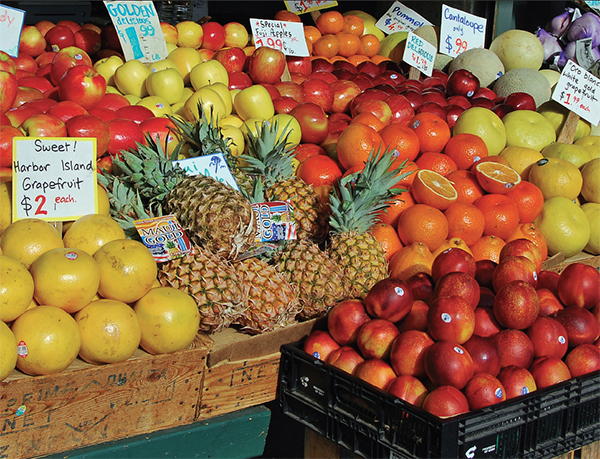
How Do You Become a Food Co-op Member?
In order to become a member of a food co-op, you must pay a small initial fee and then typically invest a certain amount of money into the co-op to purchase a share. Sometimes members can accumulate more shares (by paying an annual fee, for example). Members can also help run the co-op by volunteering their time. Members reap the benefits of their membership by having access to discounted prices on food products. However, if you decide not to become a member, some food co-ops still allow non-members to shop at their stores without the membership discount.
How Do You Become a Buying Club Member?
If you are looking to join a buying club in your area, it is best to contact your regional co-op distributor and ask them for information on local buying clubs. Check out the Web sites of local distributors to see if they have links to buying clubs near you. Or ask friends and neighbors if they’re aware of any buying clubs that are active in your area.
How Do You Start Your Own Food Co-op?
Here are some steps to follow in order to establish your own food co-op:
1. Invite potential members to meet and discuss the start-up of a food co-op. Identify how a food co-op may help the finances of the members.
2. Hold a meeting in which potential members vote to continue the process of forming a co-op and then select a committee for this purpose.
3. Determine how often the co-op will be used by the potential members.
4. Discuss the results of any surveys at another meeting and then vote to see if the plans should proceed.
5. Do a needs analysis (determine what the members will need in order to establish a food co-op).
6. Hold a meeting to discuss the outcome of the needs analysis and vote (anonymously) on whether or not to proceed with the co-op.
7. Develop a business plan for the co-op and decide the financial contribution needed to start the co-op.
8. At another meeting, have members vote on the business plan and if members want to continue, decide on whether or not to keep the committee members.
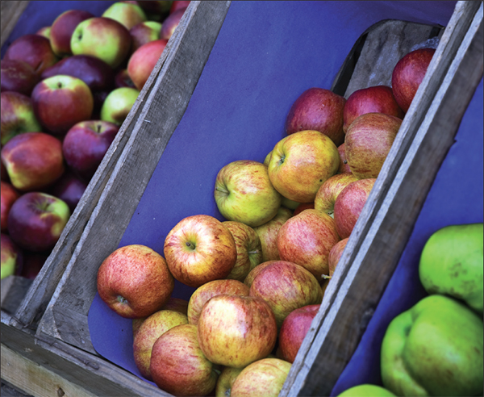
9. Prepare all legal documents and incorporate.
10. Hold a meeting for all potential members to review and accept the bylaws (terms of operation, responsibilities of members and board of directors). Hold an election for the board of directors.
11. At the first board of directors meeting, elect officers and assign them certain responsibilities in carrying out the business plan.
12. Hold a membership drive—try to recruit new members to the food co-op.
13. Pool monetary resources and create a loan application package.
14. Employ a manager for the co-op store.
15. Find a building or storefront to house the co-op.
16. Start your business!
Examples of bylaws for a food co-op:
• Establish membership requirements.
• Formulate the rights and responsibilities of all members and the board of directors.
• Stipulate the grounds for member expulsion.
• Establish rules for calling and implementing membership meetings.
• Establish how members will vote.
• Provide election procedures for board members and officers.
• Specify the number of board members and officers and how long their terms in office will be and what sort of compensation they will be awarded.
• Establish what time and where meetings will be held.
• Specify the co-op’s fiscal year dates.
• Provide information on the distribution of net earnings.
• Include any other rules of management for the co-op.
How Do You Start Your Own Buying Club?
To start your own buying club, you will need to collect a group of people (preferably more than five households). If no one in your new group has any experience with organizing a buying club, it may be beneficial for you to temporarily join a buying club to see how it works. Once you are confident in your understanding of a buying club, it’s time to begin!
1. Find a co-op distributor’s (wholesaler’s) pricing guide to share with the others in your buying club, so you all have an understanding of the products available and the savings from which you’ll benefit. If you’ll be buying from local farms, discuss pricing and bulk discounts with the farmers.
2. Have a meeting and invite all those who are interested in joining your buying club. Emphasize that a buying club requires its members to share in all responsibilities—from placing orders to picking up deliveries to collecting the money—and that they will all reap the benefits of obtaining great organic and natural foods at wholesale prices.
3. Establish an organizational committee. Discuss areas such as coordination, price guide distribution, orderings, potential delivery location, what supplies will be needed, bookkeeping, and how to orient new members.
4. Draw up any membership requirements you think necessary.
5. Brainstorm possible delivery sites, such as churches, firehouses, or other public buildings. Your optimal site should be able to accommodate a large truck and have long hours of operation. Make sure you will have enough space at the site to go through the products and distribute them accordingly.
6. Develop a name for your buying club and fill out a membership application with the co-op distributor of your choice. You should receive some sort of confirmation, complete with order deadlines, date of delivery, and a simple orientation to the buying club.
7. Start enjoying your healthy foods for lower prices!
The production of maple syrup and maple sugar is purely an American industry, Canada being the only country outside of the United States where they are made. The earliest explorers in this country found the Native Americans making sugar from maple trees, and in some sections producing it in quantity for trade. The settlers began to make maple products as well and to attempt to improve their manufacture. For many years, maple sugar was the only sugar used, and despite refinements, beyond the tapping and boiling, the general process remains the same as at that time.
All the maples have sweet sap, but only from a few of the species has sugar been made in worthwhile quantities. The first place is held by the sugar maple and a variety of it—the black maple. These can be found in the Northeastern region of the United States, as well as the northern Midwest. Other varieties, including the red maple, the silver maple, and the Oregon maple, can be tapped, but will produce smaller quantities of syrup. It takes approximately 40 gallons of sap to make 1 gallon of syrup, so it is generally not worthwhile to tap the less productive tree varieties.
Tapping
The quantity of sap that a tree yields stands in direct relation to the size of its crown. It is good to make it a rule to tap only one place on a tree; by doing so the life of the tree is prolonged. Large trees might be tapped in two and sometimes three places without injury, but not in two places so near together that the sap from the two is collected in one bucket. Each hole should heal over in as quickly as one season.
Before tapping, the side of the tree should be brushed with a stiff broom to remove all loose bark and dirt and a spot selected where the bark looks healthy, some distance from the scar of a previous tapping. Care should also be taken to tap where a bucket attached to the spout inserted in the hole will hang level and be partly supported by the tree itself. The distance from the ground should be about waist high, convenient for the sap collector. In general it is best to tap on the side of the tree where other trees do not shade the spot. The main requisite in tapping a tree is a good sharp bit with which a clean-cut hole can be made. A rough, feathered hole soon becomes foul, stopping the flow. After the tapping, all shavings should be removed to make the hole clean. The bark should never be cut away before boring the hole, as this shortens the life of the tree.
General practice concerning the size of the hole seems to indicate that three-eighths to half an inch is the best dia-meter; then, if the season is long and a warm spell interrupts the flow, the holes can be reamed out to one-half to five-eighths of an inch, and thereby secure an increased run. A thirteen thirty-seconds of an inch bit is often used. The bit should be especially sharp and should bring the shavings to the surface. Its direction is slightly upward into the tree. The slant allows the hole to drain readily.
The depth of the hole should be regulated by the size of the tree, as only the layers next to the bark are alive and contain enough sap to flow freely. Toward the interior the flow diminishes. With the ordinary tree a hole less than 1½ to 2 inches deep is best. In small trees make a short incision just through the sapwood. In any case boring should be stopped when dark colored shavings appear, as this shows dead wood and that the sapwood has been passed through. It is good policy to tap early in the season in order to obtain the earlier runs, which are generally the sweetest. “Sugar weather” begins sometime between mid-February to mid-March, when the days are becoming warm, the temperature going above 32° F, and the nights are still frosty.
The spout, or spile, is the tube through which the sap flows into the bucket. It is usually of metal, but hollow reeds are sometimes used. The best are perfectly cylindrical and of an even taper, making them easy to insert and to remove without interfering with the wood tissue. The perfect spout should be strong enough to support the bucket of sap safely, and for obvious reasons should bring the whole weight on the bark of the tree and not on the inner tissue or sapwood. A spout should have a hook or stop on which the bucket is to hang, unless the bucket may hang on the spout itself, and it is best to have a spout with a small hole, because one with a large hole allows the bore to dry out faster when there are strong winds. Buckets are typically of galvanized metal (free from corrosion or rust, covered, and fitting well to the tree). Sometimes old plastic one-gallon milk cartons are used, since their narrow neck prevents debris from entering. Make sure to clean any container thoroughly before use.
The sap should be collected each day and not be allowed to accumulate. It is also necessary to keep the buckets and containers clean, and they should be washed in warm water after each run. So long as it is cold, you may store the sap outdoors for up to three days in any large metal or plastic container. When pouring the sap into its collecting device, stretch a flannel cloth over the top of the tanks and pour the sap through this to remove any twigs, leaves, or pieces of dirt.
Syrup and Sugar Making
Once you have enough sap to start making syrup, you may start to boil it down. Use any outdoor method, from bonfire to coal-burning range, camp stove to commercial evaporator, but avoid boiling sap inside, as it results in a sticky residue on your walls.
Use two pans, one to evaporate excess moisture from the sap and concentrate it into syrup, and one as a finishing pan, in which you will finish boiling it. The evaporator should have a large bottom surface area, and the sap should not be deeper than 1 to 1½ inches in the pan at any time. The size of the pan depends on how much sugaring you intend to do—it is best if it can hold at least one gallon. Put in an inch or two of sap, boil, and add more, a little at a time, so as not to stop boiling or materially change the density of the boiling liquid; then, when this charge is concentrated, or has reached approximately 6 degrees above the temperature at which water boils (use a candy thermometer to monitor it), the syrup should be drawn off. Care must be exercised not to allow the remaining syrup in the pan to he burned. While evaporating, use a kitchen strainer to skim off the froth, and keep a spoon for stirring on hand.
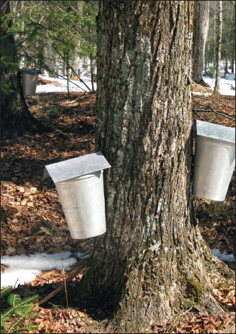
To finish the syrup, pour it through a piece of felt cloth, or two pieces of thick flannel, into the finishing pot. Once the syrup has reached 7 degrees above the boiling point of water, it is ready for storage.
Glass containers are the best method for keeping syrup, although airtight plastic and metal containers will also work. When carefully canned, syrup will keep from one season to another without souring or bursting the jar. It is best to store syrup immediately after finishing, while still hot, and then keep at an even, cold temperature. Temperatures around freezing, however, should not be used, as this may crystallize the syrup.
“Sugaring-off” applies to the further treatment of the maple syrup by which it is made into a solid product. The ordinary iron pot of the kitchen is filled nearly half full with the syrup and this concentrated over the fire. Use a candy thermometer to determine the proper point of stopping the boiling. In the first runs of sap the boiling should be carried up to 26 to 28 degrees above the boiling point of water at that elevation to make a medium hard sugar. With later runs the finishing temperature should be 28 to 38 degrees above the boiling point. After the thick syrup has reached the proper boiling point, it should be taken from the fire and stirred until somewhat cooled. This gives it a uniform grain and color in the mold. As in syrup making one should “sugar-off” a charge before adding any more syrup. The hardness of the sugar produced is to a large extent controlled by its moisture content. High temperatures are required to evaporate more of the water, but note that for softer sugars you should use slightly lower temperatures.
Like brown sugar, maple sugar does not keep well in a moist atmosphere. It tends to absorb water, molds rather quickly, and if finished at too low a temperature the sugar is soft and the liquid portion drains out. Therefore sugar which is to be stored should always be boiled to a high temperature. It can be wrapped in paper, but should not be put in covered containers unless these are absolutely sealed. It is best to store the sugar in a warm room of even temperature. If the cakes are sealed without access to air, a cold place can be used, but make sure they are kept dry.
Edible Wild Plants and Mushrooms
Wild Vegetables, Fruits, and Nuts
Agave
Description: Agave plants have large clusters of thick leaves that grow around one stalk. They grow close to the ground and only flower once before dying.
Location: Agave like dry, open areas and are found in the deserts of the American West.
Edible Parts and Preparing: Only agave flowers and buds are edible. Boil these before consuming. The juice can be collected from the flower stalk for drinking.
Other Uses: Most agave plants have thick needles on the tips of their leaves that can be used for sewing.
Asparagus
Description: When first growing, asparagus looks like a collection of green fingers. Once mature, the plant has fernlike foliage and red berries (which are toxic if eaten). The flowers are small and green and several species have sharp, thornlike projections.
Location: It can be found growing wild in fields and along fences. Asparagus is found in temperate areas in the United States.
Edible Parts and Preparing: It is best to eat the young stems, before any leaves grow. Steam or boil them for ten to fifteen minutes before consuming. The roots are a good source of starch, but don’t eat any part of the plant raw, as it could cause nausea or diarrhea.
Beech
Description: Beech trees are large forest trees. They have smooth, light gray bark, very dark leaves, and clusters of prickly seedpods.
Location: Beech trees prefer to grow in moist, forested areas. These trees are found in the Temperate Zone in the eastern United States.
Edible Parts and Preparing: Eat mature beechnuts by breaking the thin shells with your fingers and removing the sweet, white kernel found inside. These nuts can also be used as a substitute for coffee by roasting them until the kernel turns hard and golden brown. Mash up the kernel and boil or steep in hot water.
Blackberry and Raspberry
Description: These plants have prickly stems that grow upright and then arch back toward the ground. They have alternating leaves and grow red or black fruit.
Location: Blackberry and raspberry plants prefer to grow in wide, sunny areas near woods, lakes, and roads. They grow in temperate areas.
Edible Parts and Preparing: Both the fruits and peeled young shoots can be eaten. The leaves can be used to make tea.
Burdock
Description: Burdock has wavy-edged, arrow-shaped leaves. Its flowers grow in burrlike clusters and are purple or pink. The roots are large and fleshy.
Location: This plant prefers to grow in open waste areas during the spring and summer. It can be found in the Temperate Zone in the north.
Edible Parts and Preparing: The tender leaves growing on the stalks can be eaten raw or cooked. The roots can be boiled or baked.
Cattail
Description: These plants are grasslike and have leaves shaped like straps. The male flowers grow above the female flowers, have abundant, bright yellow pollen, and die off quickly. The female flowers become the brown cattails.
Location: Cattails like to grow in full-sun areas near lakes, streams, rivers, and brackish water. They can be found all over the country.
Edible Parts and Preparing: The tender, young shoots can be eaten either raw or cooked. The rhizome (rootstalk) can be pounded and made into flour. When the cattail is immature, the female flower can be harvested, boiled, and eaten like corn on the cob.
Other Uses: The cottony seeds of the cattail plant are great for stuffing pillows. Burning dried cattails helps repel insects.
Chicory
Description: This is quite a tall plant, with clusters of leaves at the base of the stem and very few leaves on the stem itself. The flowers are sky blue in color and open only on sunny days. It produces a milky juice.
Location: Chicory grows in fields, waste areas, and alongside roads. It grows primarily as a weed all throughout the country.
Edible Parts and Preparing: The entire plant is edible. The young leaves can be eaten in a salad. The leaves and roots may also be boiled as you would regular vegetables. Roast the roots until they are dark brown, mash them up, and use them as a substitute for coffee.
Cranberry
Description: The cranberry plant has tiny, alternating leaves. Its stems crawl along the ground and it produces red berry fruits.
Location: Cranberries only grow in open, sunny, wet areas. They thrive in the colder areas in the northern states.
Edible Parts and Preparing: The berries can be eaten raw, though they are best when cooked in a small amount of water, adding a little bit of sugar if desired.
Dandelion
Description: These plants have jagged leaves and grow close to the ground. They have bright yellow flowers.
Location: Dandelions grow in almost any open, sunny space in the United States.
Edible Parts and Preparing: All parts of this plant are edible. The leaves can be eaten raw or cooked and the roots boiled. Roasted and ground roots can make a good substitute for coffee.
Other Uses: The white juice in the flower stem can be used as glue.
Elderberry
Description: This shrub has many stems containing opposite, compound leaves. Its flower is white, fragrant, and grows in large clusters. Its fruits are berry-shaped and are typically dark blue or black.
Location: Found in open, wet areas near rivers, ditches, and lakes, the elderberry grows mainly in the eastern states.
Edible Parts and Preparing: The flowers can be soaked in water for eight hours and then the liquid can be drunk. The fruit is also edible but don’t eat any other parts of the plant—they are poisonous.
Hazelnut
Description: The nuts grow on bushes in very bristly husks.
Location: Hazelnut grows in dense thickets near streambeds and in open areas and can be found all over the United States.
Edible Parts and Preparing: In the autumn, the hazelnut ripens and can be cracked open and the kernel eaten. Eating dried nuts is also tasty.
Juniper
Description: Also known as cedar, this shrub has very small, scaly leaves that are densely crowded on the branches. Berrylike cones on the plant are usually blue and are covered with a whitish wax.
Location: They grow in open, dry, sunny places throughout the country.
Edible Parts and Preparing: Both berries and twigs are edible. The berries can be consumed raw or the seeds may be roasted to make a substitute for coffee. Dried and crushed berries are good to season meat. Twigs can be made into tea.
Lotus
Description: This plant has large, yellow flowers and leaves that float on or above the surface of the water. The lotus fruit has a distinct, flattened shape and possesses around twenty hard seeds.
Location: Found on fresh water in quiet areas, the lotus plant is native to North America.
Edible Parts and Preparing: All parts of the lotus plant are edible, raw or cooked. Bake or boil the fleshy parts that grow underwater and boil young leaves. The seeds are quite nutritious and can be eaten raw or they can be ground into flour.
Marsh Marigold
Description: Marsh marigold has round, dark green leaves and a short stem. It also has bright yellow flowers.
Location: The plant can be found in bogs and lakes in the northeastern states.
Edible Parts and Preparing: All parts can be boiled and eaten. Do not consume any portion raw.
Mulberry
Description: The mulberry tree has alternate, lobed leaves with rough surfaces and blue or black seeded fruits.
Location: These trees are found in forested areas and near roadsides in temperate and tropical regions of the United States.
Edible Parts and Preparing: The fruit can be consumed either raw or cooked and it can also be dried. Make sure the fruit is ripe or it can cause hallucinations and extreme nausea.
Nettle
Description: Nettle plants grow several feet high and have small flowers. The stems, leafstalks, and undersides of the leaves all contain fine, hairlike bristles that cause a stinging sensation on the skin.
Location: This plant grows in moist areas near streams or on the edges of forests. It can be found throughout the United States.
Edible Parts and Preparing: The young shoots and leaves are edible. To eat, boil the plant for ten to fifteen minutes.
Oak
Description: These trees have alternating leaves and acorns. Red oaks have bristly leaves and smooth bark on the upper part of the tree and their acorns need two years to reach maturity. White oaks have leaves with no bristles and rough bark on the upper part of the tree. Their acorns only take one year to mature.
Location: Found in various locations and habitats throughout the country.
Edible Parts and Preparing: All parts of the tree are edible, but most are very bitter. Shell the acorns and soak them in water for one or two days to remove their tannic acid. Boil the acorns to eat or grind them into flour for baking.
Palmetto Palm
Description: This is a tall tree with no branches and has a continual leaf base on the trunk. The leaves are large, simple, and lobed and it has dark blue or black fruits that contain a hard seed.
Location: This tree is found throughout the southeastern coast.
Edible Parts and Preparing: The palmetto palm fruit can be eaten raw. The seeds can also be ground into flour, and the heart of the palm is a nutritious source of food, but the top of the tree must be cut down in order to reach it.
Persimmon
Description: The persimmon tree has alternating, elliptical leaves that are dark green in color, and inconspicuous flowers. It has orange fruits that are very sticky and contain many seeds.
Location: Growing on the margins of forests, it resides in the eastern part of the country.
Edible Parts and Preparing: The leaves provide a good source of vitamin C and can be dried and soaked in hot water to make tea. The fruit can be consumed either baked or raw and the seeds may be eaten once roasted.
Pine
Description: Pine trees have needlelike leaves that are grouped into bundles of one to five needles. They have a very pungent, distinguishing odor.
Location: Pines grow best in sunny, open areas and are found all over the United States.
Edible Parts and Preparing: The seeds are completely edible and can be consumed either raw or cooked. Also, the young male cones can be boiled or baked and eaten. Peel the bark off of thin twigs and chew the juicy inner bark. The needles can be dried and brewed to make tea that’s high in vitamin C.
Other Uses: Pine tree resin can be used to waterproof items. Collect the resin from the tree, put it in a container, heat it, and use it as glue or, when cool, rub it on items to waterproof them.
Plantain
Description: The broad-leafed plantain grows close to the ground and the flowers are situated on a spike that rises from the middle of the leaf cluster. The narrow-leaf species has leaves covered with hairs that form a rosette. The flowers are very small.
Location: Plantains grow in lawns and along the side of the road in the northern Temperate Zone.
Edible Parts and Preparing: Young, tender leaves can be eaten raw and older leaves should be cooked before consumption. The seeds may also be eaten either raw or roasted. Tea can also be made by boiling 1 ounce of the plant leaves in a few cups of water.
Pokeweed
Description: A rather tall plant, pokeweed has elliptical leaves and produces many large clusters of purple fruits in the late spring.
Location: Pokeweed grows in open and sunny areas in fields and along roadsides in the eastern United States.
Edible Parts and Preparing: If cooked, the young leaves and stems are edible. Be sure to boil them twice and discard the water from the first boiling. The fruit is also edible if cooked. Never eat any part of this plant raw, as it is poisonous.
Prickly Pear Cactus
Description: This plant has flat, pad-like green stems and round, furry dots that contain sharp-pointed hairs.
Location: Found in arid regions and in dry, sandy areas in wetter regions, it can be found throughout the United States.
Edible Parts and Preparing: All parts of this plant are edible. To eat the fruit, peel it or crush it to make a juice. The seeds can be roasted and ground into flour.
Reindeer Moss
Description: This is a low plant that does not flower. However, it does produce bright red structures used for reproduction.
Location: It grows in dry, open areas in much of the country.
Edible Parts and Preparing: While having a crunchy, brittle texture, the whole plant can be eaten. To remove some of the bitterness, soak it in water and then dry and crush it, adding it to milk or other foods.
Sassafras
Description: This shrub has different leaves—some have one lobe, others two lobes, and others have none at all. The flowers are small and yellow and appear in the early spring. The plant has dark blue fruit.
Location: Sassafras grows near roads and forests in sunny, open areas. It is common throughout the eastern states.
Edible Parts and Preparing: The young twigs and leaves can be eaten either fresh or dried—add them to soups. Dig out the underground portion of the shrub, peel off the bark, and dry it. Boil it in water to make tea.
Other Uses: Shredding the tender twigs will make a handy toothbrush.
Spatterdock
Description: The leaves of this plant are quite long and have a triangular notch at the base. Spatterdock has yellow flowers that become bottle-shaped fruits, which are green when ripe.
Location: Spatterdock is found in fresh, shallow water throughout the country.
Edible Parts and Preparing: All parts of the plant are edible and the fruits have brown seeds that can be roasted and ground into flour. The rootstock can be dug out of the mud, peeled, and boiled.
Strawberry
Description: This is a small plant with a three-leaved pattern. Small white flowers appear in the springtime and the fruit is red and very fleshy.
Location: These plants prefer sunny, open spaces, are commonly planted, and appear in the northern Temperate Zone.
Edible Parts and Preparing: The fruit can be eaten raw, cooked, or dried. The plant leaves may also be eaten or dried to make tea.
Thistle
Description: This plant may grow very high and has long-pointed, prickly leaves.
Location: Thistle grows in woods and fields all over the country.
Edible Parts and Preparing: Peel the stalks, cut them into smaller sections, and boil them to consume. The root may be eaten raw or cooked.
Walnut
Description: Walnuts grow on large trees and have divided leaves. The walnut has a thick outer husk that needs to be removed before getting to the hard, inner shell.
Location: The black walnut tree is common in the eastern states.
Edible Parts and Preparing: Nut kernels become ripe in the fall and the meat can be obtained by cracking the shell.
Water Lily
Description: With large, triangular leaves that float on water, these plants have fragrant flowers that are white or red. They also have thick rhizomes that grow in the mud.
Location: Water lilies are found in many temperate areas.
Edible Parts and Preparing: The flowers, seeds, and rhizomes can be eaten either raw or cooked. Peel the corky rind off of the rhizome and eat it raw or slice it thinly, dry it, and grind into flour. The seeds can also be made into flour after drying, parching, and grinding.
Wild Grapevine
Description: This vine will climb on tendrils, and most of these plants produce deeply lobed leaves. The grapes grow in pyramidal bunches and are black-blue, amber, or white when ripe.
Violets can be candied and used to decorate cakes, cookies, or pastries. Pick the flowers with a tiny bit of stem, wash, and allow to dry thoroughly on a paper towel or a rack. Heat ½ cup water, 1 cup sugar, and ¼ teaspoon almond extract in a saucepan. Use tweezers to carefully dip each flower in the hot liquid. Set on wax paper and dust with sugar until every flower is thoroughly coated. If desired, snip off remaining stems with small scissors. Allow flowers to dry for a few hours in a warm, dry place.
Location: Climbing over other vegetation on the edges of forested areas, they can be found in the eastern and southwestern parts of the United States.
Edible Parts and Preparing: Only the ripe grape and the leaves can be eaten.
Wild Onion and Garlic
Description: These are recognized by their distinctive odors.
Location: They are found in open areas that get lots of sun throughout temperate areas.
Edible Parts and Preparing: The bulbs and young leaves are edible and can be consumed either raw or cooked.
Wild Rose
Description: This shrub has alternating leaves and sharp prickles. It has red, pink, or yellow flowers and fruit (rose hip) that remains on the shrub all year.
Location: These shrubs occur in dry fields throughout the country.
Edible Parts and Preparing: The flowers and buds are edible raw or boiled. Boil fresh, young leaves to make tea. The rose hips can be eaten once the flowers fall and they can be crushed once dried to make flour.
Edible Wild Mushrooms
A walk through the woods will likely reveal several varieties of mushrooms, and chances are that some are the types that are edible. However, because some mushrooms are very poisonous, it is important never to try a mushroom of which you are unsure. Never eat any mushroom that you cannot positively identify as edible. Also, never eat mushrooms that appear wilted, damaged, or rotten.
Here are some common edible mushroom that you can easily identify and enjoy.
Chanterelles
These trumpet-shaped mushrooms have wavy edges and interconnected blunt-ridged gills under the caps. They are varied shades of yellow and have a fruity fragrance. They grow in summer and fall on the ground of hardwood forests. Because chanterelles tend to be tough, they are best when slowly sautéed or added to stews or soups.
Notes: Beware of Jack O’Lantern mushrooms, which look and smell similarly to chanterelles. Jack O’Lanterns have sharp knifelike gills instead of the blunt gills of chanterelles, and generally grow in large clusters at the base of trees or on decaying wood.
Coral Fungi
These fungi are aptly named for their bunches of upward-facing branching stems, which look strikingly like coral. They are whitish, tan, yellowish, or sometimes pinkish or purple. They may reach 8 inches in height. They grow in the summer and fall in shady, wooded areas.
Notes: Avoid coral fungi that are bitter, have soft, gelatinous bases, or turn brown when you poke or squeeze them. These may have a laxative effect, though are not life-threatening.
Morels
Morels are sometimes called sponge, pine cone, or honeycomb mushrooms because of the pattern of pits and ridges that appears on the caps. They can be anywhere from 2 to 12 inches tall. They may be yellow, brown, or black and grow in spring and early summer in wooded areas and on river bottoms. To cook, cut in half to check for insects, wash, and sauté, bake, or stew.
Notes: False morels can be poisonous and appear similar to morels because of their brainlike irregularly shaped caps. However, they can be distinguished from true morels because false morel caps bulge inward instead of outward. The caps have lobes, folds, flaps, or wrinkles, but not pits and ridges like a true morel.
Puffballs
These round or pear-shaped mushrooms are often mistaken for golf balls or eggs. They are always whitish, tan, or gray and sometimes have a thick stem. Young puffballs tend to be white and older ones yellow or brown. Fully matured puffballs have dark spores scattered over the caps. Puffballs are generally found in late summer and fall on lawns, in the woods, or on old tree stumps. To eat, peel off the outer skin and eat raw or batter-fried.
Notes: Slice each puffball open before eating to be sure it is completely white inside. If there is any yellow, brown, or black, or if there is a developing mushroom inside with a stalk, gills, and cap, do not eat! Amanitas, which are very poisonous, can appear similar to puffballs when they are young. Do not eat if the mushroom gives off an unpleasant odor.
Chanterelles
This mushroom got its name from its cap, which is a white cylinder with shaggy, upturned, brownish scales. As the mushroom matures, the bottom outside circumference of the cap becomes black. Shaggy manes are generally 4 to 6 inches tall and grow in all the warm seasons in fields and on lawns.
Shaggy manes are tastiest eaten when young, but they’re easiest to identify once the bottoms of the caps begin to turn black. They are delicious sautéed in butter or olive oil and lightly seasoned with salt, garlic, or nutmeg.
Coral mushroom.
Morels.
Puffball mushrooms.
Shaggy mane mushroom.
Important Considerations in Sausage Making
Temperatures
Meat products are extremely perishable and must be maintained under refrigeration (40ºF or below). When you have finished processing a product, return it to the refrigerator. After the product has been formulated, smoke and cook the product to the required temperature and then return the product to refrigeration. Sausage that hasn’t been properly refrigerated will spoil and can make you sick.
Sanitation
There is no substitute for keeping the tables, utensils, and ingredients clean and free from dirt and contamination. Use plenty of hot water and soap before and after processing sausages. Always keep your hands clean.
Taking Notes
Just as you keep a copy of a good recipe, you should keep notes on the formulation and processing procedures of your favorite smoked and cooked sausage. Ingredients, times, temperatures, and end results should be noted. This will help to make a better sausage the next time.
Fat Content
Different sausages have different amounts of fat. Avoid making the formula too lean as the sausage will be dry and hard. Fresh pork sausage contains 30 to 45 percent fat. Smoked or roasted sausage contains 20 to 30 percent fat. Formulate the fat content just as you would the other ingredients in a sausage.
Nitrates and Nitrites
These curing ingredients are required to achieve the characteristic flavor, color, and stability of cured meat. Nitrate and nitrite are converted to nitric oxide by microorganisms and combine with the meat pigment myoglobin to give the cured meat color. However, more importantly, nitrite provides protection against the growth of botulism-producing organisms, acts to show rancidity, and stabilizes the flavor of the cured meat. Potassium nitrate (saltpeter) was the salt historically used for curing. However, we now know that saltpeter is much stronger than necessary for curing meat.
Much controversy has surrounded the use of nitrite in recent years—for good reason. Too many nitrites can cause all sorts of health problems, including cancer. However, the amount used in sausage making is not enough to cause concern and is far less of a worry than the botulism that can result if it is not used. A commercial premixed cure can be used when nitrate or nitrite is called for in the recipe. The premixes have been diluted with salt so that the small quantities of nitrites and nitrates can more easily be weighed. This reduces the possibility of serious error in handling pure nitrate or nitrite. Several premixes are available. Many local grocery stores stock Morton® Tender Quick® Product and other brands of premix cure.
Because the amount of premixed cure will vary depending on what brand is used, it is important to follow the directions on the package. The recipes below are only for fresh sausage, which does not require a cure. Fresh sausage is delicious, simple to make, and can be frozen if you do not want to cook and serve it right away.
Storage
The length of time a sausage can be stored depends on the type of sausage. Fresh sausage is highly perishable and will only last seven to ten days. However, it may be frozen for four to six months if wrapped in moisture-vapor proof wrap (freezer paper). Smoked sausages may last from two to four weeks under refrigeration.
Fresh Pork Sausage
Fresh pork sausage is a mixture of pork meats, salt, and spices which have been ground or chopped with no added water or extenders. Fat content usually ranges from 35 to 50 percent depending upon individual preference. For a spicier sausage, add a teaspoon of crushed red pepper or ½ teaspoon ground red pepper.
Ingredients
• 1½ lbs. 60% lean ground pork
• 1 teaspoon sugar
• 1 teaspoon salt
• 3 tablespoons fresh minced parsley
• 1 teaspoon sage
Directions
Mix spices with ground meat. Form into nine small patties and cook in a cast iron skillet until brown on both sides and cooked in the middle. Or stuff in natural casings (pork rounds) or collagen casings.
All Beef Sausage
This recipe can be halved or quartered for smaller portions. You can substitute 85% lean ground beef for the beef chucks and plates in this recipe if you don’t want to pull out the meat grinder. You can also mix up a large batch of the spices ahead of time to have on hand and use a portion every time you make sausage.
Ingredients
• 7½ lbs. fresh boneless beef chucks (85% lean)
• 2½ lbs. fresh boneless beef plates (50% fat)
• ½ cup salt
• 2 tablespoons sugar
• 3 tablespoons ground white pepper
• 1 teaspoons mashed peeled garlic
• 1½ tablespoons paprika
• 2½ teaspoons ground coriander
1. Grind beef chucks through ⅜-inch plate and beef plates through ¼-inch plate. Combine meat ingredients adding salt, sugar, and seasoning and mix well for five minutes.
2. Transfer to stuffer and stuff in cellulose or fibrous casings three to four inches in diameter or large beef casing. Refrigerate or freeze immediately.
Polish Sausage (Kielbasa)
Polish sausage is made of coarsely ground lean pork with some added beef. The basic spices for this well-known sausage are garlic and marjoram. The recipe can be halved or quartered for smaller portions.
Ingredients
• 8 lbs. pork shoulder or lean trim (75% lean)
• 2 lbs. beef trimmings (80% lean)
• 4.8 oz. ice or water
• 7¼ tablespoons salt
• 4 tablespoons sugar
• 2½ tablespoons white pepper
• 2¼ teaspoons mustard seed
• 4 teaspoons marjoram
• 1½ teaspoons garlic powder
• 2½ teaspoons nutmeg
• 1⅓ cups nonfat dry milk
1. Grind beef and pork through ¼-inch plate. Add spices and water, mix thoroughly. Grind through 3/16-inch plate.
2. Stuff into natural hog casings. Refrigerate or freeze immediately.
Venison or Game Sausage
Venison is high quality, delicious, and nutritious meat. Care should be used in handling venison just as you would any other meat. Most of the flavor in a meat product is in the fat; therefore, in making a breakfast type sausage using game meat, pork fat is used. An average deer will yield 50 to 60 pounds of venison. This recipe is perfect if you want to save half your venison for steaks or other use and use half for sausage. If you have a smaller quantity of venison, just divide the recipe accordingly.
Ingredients
• 25 lbs. lean venison or trimmings
• 25 lbs. fat pork (jowls or fresh bellies)
• 2 cups salt
• ⅔ cup black pepper
• ⅓ cup ground ginger
• ½ cup rubbed sage
• ¼ cup crushed red pepper (optional)
• ¼ cup ground red pepper (optional)
1. Cut lean venison and pork into small pieces, add spices, and mix. Grind twice through ⅛-inch or 3/16-inch plate.
2. Sausage may be stuffed or pattied. Refrigerate or freeze immediately.
Cooked Bratwurst
Bratwurst is a typical fresh German style sausage. It is a mild sausage, often served with sauerkraut.
Ingredients
• 10 lbs. pork trim (70% lean)
• 3 lbs. ice or water
• 6½ tablespoons salt
• 1½ tablespoons ground white pepper
• 1¾ teaspoons sugar
• ½ tablespoon mace
• 1 tablespoon onion powder
1. Grind pork through ¼-inch plate and mix with salt, water, and spices. Stuff in natural hog casings or 32-mm collagen casings.
2. Steam or water cook at 170ºF to an internal temperature of 155ºF. Store in the refrigerator or freezer.
Curing Virginia Ham
Meat has been preserved for centuries by drying, salting, and curing. Virginia ham was one of the first agricultural products exported from North America. Today, Virginia ham is still loved around the world for its distinctive savory taste. To cure ham at home, a few simple rules should be followed.
Figure 1 is a “Country Style” ham. This ham has a long shank (solidbone) and a buttcut at the sacral joint. This style of cutting leaves less lean meat exposed in the shank and butt areas, which reduces the possibility of spoilage.
Figure 2 is a “Regular” cut ham. This style of cut is satisfactory for curing and aging hams under conditions of controlled temperature and humidity. The shank is cut short, exposing an open bone with marrow and lean tissue around the bone. The butt is cut between the second and third Sacral Vertebrae which results in a larger lean cut butt face than on “Country Style” hams.
To get a high quality cured ham, you have to start with a high quality fresh ham. Choose ham from young, healthy, fast-growing hogs with a desirable lean-to-fat ratio. If you are not butchering your own animal, fresh hams can be purchased from grocery stores or a local butcher. Hams for curing should have a long thick cushion (Figure 1), a deep and wide butt face, minimal seam, and external fat as seen on the collar (Figure 1) and alongside the butt face (Figure 3A), and weigh less than 24 pounds. Heavier hams are normally fatter and are more likely to spoil before the cure adjuncts penetrate to prevent deterioration.
Keep the Hams Properly Chilled
Fresh hams should be kept chilled below 40°F before being cured and then kept between 36° and 40°F during curing.
Cure Application
Hams can be cured in just salt, or you can add a dry sugar cure for a richer, sweeter flavor. For each 25 lbs. of fresh meat, use:
• 2 pounds salt
• ½ pound sugar
• ½ ounce coarse kosher salt
Figure 3A illustrates a high-quality ham that has a firm, bright-colored lean with at least a small amount of marbling (specks of fat in the lean) in the butt face.
Figure 3B reveals the type of ham to avoid. Its muscles are soft, usually pale in color and lack marbling. They also “weep” excessively and will shrink more during curing. The open seams between the muscles allow bacterial and insect invasion.
Mix these ingredients thoroughly and divide into two equal parts. Apply the first half on day one and the second portion on day seven of the curing period. Rub the curing mixture into all lean surfaces (Figure 1) of the ham. Cover the skin and fat (little will be absorbed through these surfaces).
Virginia style hams should be cured seven days per inch of cushion depth (Figure 3A), or one and a half days per pound of ham. Keep accurate records of placing hams in cure and mark on your calendar when it’s time to remove hams from cure. During the curing period, keep hams at a temperature of 36 to 40°F.
After Curing—Soak and Wash
When the curing period has passed, the hams should be placed in a tub of clean, cold water for one hour. This will dissolve most of the surface curing mix and make the meat receptive to smoke. After soaking, scrub the ham with a stiff bristle brush and allow it to dry.
Cure Equalization
After the ham has been washed, store it at 50-60°F for approximately fourteen days to permit the cure adjuncts to be distributed evenly throughout the ham. The product will shrink approximately 8–10 percent during cure application and equalization.
Final Steps
In Southeastern Virginia, most hams are smoked to accelerate drying and to give added flavor. The Smithfield ham is smoked for a long time at a low temperature (under 90°F). Wood from hardwood species of trees (trees that shed their leaves in the fall) should be used to produce the smoke. Hickory is the most popular, but apple, plum, peach, oak, maple, beech, ash, or cherry may be used. Pine, cedar, spruce, and other “needle leaf” trees are not to be used for smoking meat since they give off resin which has a bitter taste and odor.
The fire should be a “cool” smoldering type that produces dense smoke. The temperature of the smokehouse should be kept below 90°F. Hams should be hung in a smokehouse* so that they do not touch each other. Smoke until they become chestnut brown in color, which may take one to three days.
In Southwest Virginia, hams are not traditionally smoked after curing, washing, and equalizing. Instead, the final step is to rub hams with the following mixture.
For 25 lbs. of ham:
• ½ pound black pepper
• 1 cup molasses
• ¼ pound of brown sugar
• ¼ ounce coarse kosher salt
• ¼ ounce of cayenne pepper
Then bag the hams as shown.
Age the Hams for 45 to 180 Days
As with wine or cheese, it is during the aging process that rich flavor develops. Age hams for 45 to 180 days at 75 to 95°F and a relative humidity of 55 to 65 percent. Use an exhaust fan controlled by a humidistat to limit mold growth and prevent excessive drying. Air circulation is needed, particularly during the first seven to ten days of aging, to dry the ham surface. Approximately 8 to 12 percent of the initial weight is lost.
Pests
As unpleasant as it is to think about, it’s important to know that pests are drawn to cured meat and can ruin all your hard work if you don’t take certain precautions. The insects attracted to cured meat are the cheese skipper, larder beetle, and red-legged ham beetle. Mites, which are not officially insects, also may infest cured meats.
1. Cheese Skipper
This insect gets its name from the jumping habit of the larvae which bore through cheese and cured meats. Meat infested with this insect quickly rots and becomes slimy. Adult flies are two-winged and are one-third the size of houseflies. They lay their eggs on meat and cheese and multiply rapidly.
2. Larder Beetle
This insect is dark brown and has a yellowish band across its back. The adult is about ⅓ inch long. Its larvae feed on or immediately beneath the cured meat surface, but do not rot the meat. The larvae are fuzzy, brownish, and about ⅓ inch long at maturity.
3. Red-Legged Ham Beetle The larvae are purplish and about ⅓ inch long. They bore through the meat and cause it to dry rot. Adults are about ¼ inch long, brilliant greenish blue with red legs and are red at the bases of their antennae. They feed on the meat surface.
4. Mites Mites are whitish and about 1/32 inch long at maturity. Affected parts of meat infested with mites appear powdery.
To help prevent insect and mite infestation, start the curing and aging during cold weather when these insects are inactive. Proper cleaning of the aging and storage areas is essential since the cheese skipper feeds and breeds on grease and tiny scraps of meat lodged in cracks. Cracks should be sealed with putty or plastic wood after cleaning.
Screens should be installed to prevent entrance of flies, ants, and other insects that carry mites.
Double entry doors are recommended to reduce infestation of insects.
If any product becomes infested after precautions have been taken, it should be removed from the storeroom and the infested area should be trimmed. The trim should be deep enough to remove larvae that have penetrated along the bone and through the fat. The uninfested portion is safe to eat, but should be prepared and consumed promptly. The exposed lean of the trimmed areas should be protected by greasing it with salad oil or melted fat to delay molding or drying.
Protect the hams by placing a barrier between the meat and the insects. Heavy brown grocery bags with no rips or tears in them are ideal to use for this purpose. Place the ham in a bag and fold and tie the top. Then, place the bagged ham in a second bag, fold and tie. The hams wrapped by this method can be hung in a dry, cool, protected room to age. This room should be clean, tight, and well ventilated.
Preparing the Ham
The traditional four-step method of preparing Virginia ham is to:
1. Wash ham with a stiff bristled brush, removing as much of the salt as possible.
2. Place the ham in a large container, cover with cold water, and allow it to stand 10–12 hours or overnight.
3. Lift the ham from the water and place it in a deep kettle with the skin side up and cover with fresh, cold water.
4. Cover the kettle, heat to a boil, but reduce heat as soon as the water boils. Simmer 20 to 25 minutes per pound until done.
Another method of cooking is to soak, scrub, and place the ham in a covered roaster, fat side up. Then, pour 2 inches of water into the roaster and place it in a 325°F oven. Cook approximately 20 to 25 minutes per pound. Baste frequently. Cook to an internal temperature of 155°F as indicated by a meat thermometer placed in the thickest position of the ham cushion. If you do not have a thermometer, test for doneness by moving the flat (pelvic) bone. It should move easily when ham is done. Lift ham from kettle. Remove skin. Sprinkle with brown sugar and/or bread crumbs and brown lightly in a 375°F oven, or use one of the suggested glazes.
Orange Glaze: Mix 1 cup brown sugar, juice, and grated rind of one orange, spread over fat surface. Bake until lightly browned in a 375°F oven. Garnish with orange slices.
Mustard Glaze: Mix ¼ cup brown sugar, 2 teaspoons prepared mustard, 2 tablespoons vinegar, and 1 tablespoon water. Spread over fat surface and bake as directed above.
Spice Glaze: Use 1 cup brown sugar and 1 cup juice from spiced peaches or crab apples. Bake as directed above. Garnish with the whole pickled fruit.
Cooking Ham Slices
Baking: Place thick slice in covered casserole and bake in 325°F oven. Brown sugar and cloves, fruit juice, or mustard-seasoned milk may be used over the ham during baking. Uncover the last 15 to 20 minutes for browning.
Broiling: Score fat edges and lay on broiler rack. Place 4 inches from broiler and broil for specified time, turning only once.
Frying: Trim the skin off the ham slices. Cut the outer edge of fat in several places to prevent it from curling during cooking. Place a small amount of fat in a moderately hot skillet. When it has melted, add ham slices. Cook ham slowly, turning often. Allow about 10 minutes total cooking time for thin slices. Remove ham from pan and add a small amount of water to raise the drippings for red-eye gravy. To decrease the salty taste, fry ham with a small amount of water in the skillet.
How To Carve a Ham
The most delightful flavor of Virginia ham can be enjoyed from thin slices. Thus, a very sharp knife, preferably long and narrow, is needed. With the ham on a platter, dressed side up, make a cut perpendicular to the bone about 6 inches in from the end of the hock. Then follow the steps in figure 8.
How To Debone Cooked Ham
The ham is easier to slice when the bones are removed while the ham is warm.
• Place skinned ham fat side down on three or four strips of firm white cloth 3 inches wide and long enough to reach around ham and tie. Do not tie until bone is removed.
• Remove flat aitch bone (pelvic) by scalping around it.
• Take sharp knife, and, beginning at hock end, cut to bone the length of ham. Follow bones with point of knife as you cut.
• Loosen meat from bones. Remove bones.
• Tie cloth strips together, pulling ham together as you tie.
• Chill in the refrigerator overnight. Slice very thin, or have the ham sliced by machine.
Make Your Own Butter
Making butter the old-fashioned way is incredibly simple and very gratifying. It’s a great project to do with kids, too. All you need are a jar, a marble, some fresh cream, and about 20 minutes.
1. Start with about twice as much heavy whipping cream as you’ll want butter. Pour it into the jar, drop in the marble, close the lid tightly, and start shaking.
2. Check the consistency of the cream every three to four minutes. The liquid will turn into whipped cream, and then eventually you’ll see little clumps of butter forming in the jar. Keep shaking for another few minutes and then begin to strain out the liquid into another jar. This is buttermilk, which is great for use in making pancakes, waffles, biscuits, and muffins.
3. The butter is now ready, but it will store better if you wash and work it. Add ½ cup of ice cold water and continue to shake for two or three minutes. Strain out the water and repeat. When the strained water is clear, mash the butter to extract the last of the water, and strain.
4. Scoop the butter into a ramekin, mold, or wax paper.
If desired, add salt or chopped fresh herbs to your butter just before storing or serving. Butter can also be made in a food processor or blender to speed up the processing time.
Make Your Own Yogurt
Yogurt is basically fermented milk. You can make it by adding the active cultures Streptococcus thermophilus and Lactobacillus bulgaricus to heated milk, which will produce lactic acid, creating yogurt’s tart flavor and thick consistency. Yogurt is simple to make and is delicious on its own, as a dessert, in baked goods, or in place of sour cream.
Yogurt is thought to have originated many centuries ago among the nomadic tribes of Eastern Europe and Western Asia. Milk stored in animal skins would acidify and coagulate. The acid helped preserve the milk from further spoilage and from the growth of pathogens (disease-causing microorganisms).
Ingredients
Makes 4 to 5 cups of yogurt
• 1 quart milk (cream, whole, low-fat, or skim)—In general the higher the milk fat level in the yogurt, the creamier and smoother it will taste. Note: If you use home-produced milk it must be pasteurized before preparing yogurt. See box at the top of page for tips on pasteurizing milk.
• Nonfat dry milk powder—Use ⅓ cup powder when using whole or low-fat milk, or use ⅔ cup powder when using skim milk. The higher the milk solids, the firmer the yogurt will be. For even more firmness add gelatin (directions below).
• Commercial, unflavored, cultured yogurt—Use ¼ cup. Be sure the product label indicates that it contains a live culture. Also note the content of the culture. L. bulgaricus and S. thermophilus are required in yogurt, but some manufacturers may in addition add L. acidophilus or B. bifidum. The latter two are used for slight variations in flavor, but more commonly for health reasons attributed to these organisms. All culture variations will make a successful yogurt.
• 2 to 4 tablespoons sugar or honey (optional)
• 1 teaspoon unflavored gelatin (optional)—For a thick, firm yogurt, swell 1 teaspoon gelatin in a little milk for 5 minutes. Add this to the milk and nonfat dry milk mixture before cooking.
Supplies
• Double boiler or regular saucepan—1 to 2 quarts in capacity larger than the volume of yogurt you wish to make.
• Cooking or jelly thermometer—A thermometer that can clip to the side of the saucepan and remain in the milk works best. Accurate temperatures are critical for successful processing.
• Mixing spoon
• Yogurt containers—cups with lids or canning jars with lids.
• Incubator—a yogurt-maker, oven, heating pad, or warm spot in your kitchen. To use your oven, place yogurt containers into deep pans of 110°F water. Water should come at least halfway up the containers. Set oven temperature at lowest point to maintain water temperature at 110°F. Monitor temperature throughout incubation, making adjustments as necessary.
Processing
1. Combine ingredients and heat. Heating the milk is necessary in order to change the milk proteins so that they set together rather than form curds and whey. Do not substitute this heating step for pasteurization. Place cold, pasteurized milk in top of a double boiler and stir in nonfat dry milk powder. Adding nonfat dry milk to heated milk will cause some milk proteins to coagulate and form strings. Add sugar or honey if a sweeter, less tart yogurt is desired. Heat milk to 200°F, stirring gently and hold for 10 minutes for thinner yogurt, or hold 20 minutes for thicker yogurt. Do not boil. Be careful and stir constantly to avoid scorching if not using a double boiler.
2. Cool and inoculate. Place the top of the double boiler in cold water to cool milk rapidly to 112 to 115°F. Remove 1 cup of the warm milk and blend it with the yogurt starter culture. Add this to the rest of the warm milk. The temperature of the mixture should now be 110 to 112°F.
HOW TO PASTEURIZE RAW MILK
If you are using fresh milk that hasn’t been processed, you can pasteurize it yourself. Heat water in the bottom section of a double boiler and pour milk into the top section. Cover the milk and heat to 165°F while stirring constantly for uniform heating. Cool immediately by setting the top section of the double boiler in ice water or cold running water. Store milk in the refrigerator in clean containers until ready for making yogurt.
3. Incubate. Pour immediately into clean, warm containers; cover and place in prepared incubator. Close the incubator and incubate about 4 to 7 hours at 110°F, ± 5°F. Yogurt should set firm when the proper acid level is achieved (pH 4.6). Incubating yogurt for several hours past the time after the yogurt has set will produce more acidity. This will result in a more tart or acidic flavor and eventually cause the whey to separate.
4. Refrigerate. Rapid cooling stops the development of acid. Yogurt will keep for about ten to twenty-one days if held in the refrigerator at 40°F or lower.
Yogurt Types
Set yogurt: A solid set where the yogurt firms in a container and is not disturbed.
Stirred yogurt: Yogurt made in a large container then spooned or otherwise dispensed into secondary serving containers. The consistency of the “set” is broken and the texture is less firm than set yogurt. This is the most popular form of commercial yogurt.
Drinking yogurt: Stirred yogurt into which additional milk and flavors are mixed. Add fruit or fruit syrups to taste. Mix in milk to achieve the desired thickness. The shelf life of this product is four to ten days, since the pH is raised by the addition of fresh milk. Some whey separation will occur and is natural. Commercial products recommend a thorough shaking before consumption.
Fruit yogurt: Fruit, fruit syrups, or pie filling can be added to the yogurt. Place them on top, on bottom, or stir them into the yogurt.
Troubleshooting
• If milk forms some clumps or strings during the heating step, some milk proteins may have jelled. Take the solids out with a slotted spoon or, in difficult cases, after cooking pour the milk mixture through a clean colander or cheesecloth before inoculation.
• When yogurt fails to coagulate (set) properly, it’s because the pH is not low enough. Milk proteins will coagulate when the pH has dropped to 4.6. This is done by the culture growing and producing acids. Adding culture to very hot milk (+115°F) can kill bacteria. Use a thermometer to carefully control temperature.
• If yogurt takes too long to make, it may be because the temperature is off. Too hot or too cold of an incubation temperature can slow down culture growth. Use a thermometer to carefully control temperature.
• If yogurt just isn’t working, it may be because the starter culture was of poor quality. Use a fresh, recently purchased culture from the grocery store each time you make yogurt.
• If yogurt tastes or smells bad, it’s likely because the starter culture is contaminated. Obtain new culture for the next batch.
• Yogurt has over-set or incubated too long. Refrigerate yogurt immediately after a firm coagulum has formed.
• If yogurt tastes a little odd, it could be due to overheating or boiling of the milk. Use a thermometer to carefully control temperature.
• When whey collects on the surface of the yogurt, it’s called syneresis. Some syneresis is natural. Excessive separation of whey, however, can be caused by incubating yogurt too long or by agitating the yogurt while it is setting.
Storing Your Yogurt
• Always pasteurize milk or use commercially pasteurized milk to make yogurt.
• Discard batches that fail to set properly, especially those due to culture errors.
• Yogurt generally has a ten- to twenty-one-day shelf life when made and stored properly in the refrigerator below 40°F.
• Always use clean and sanitized equipment and containers to ensure a long shelf life for your yogurt. Clean equipment and containers in hot water with detergent, then rinse well. Allow to air dry.
There are endless varieties of cheese you can make, but they all fall into two main categories: soft and hard. Soft cheeses (like cream cheese) are easier to make because they don’t require a cheese press. The curds in hard cheeses (like cheddar) are pressed together to form a solid block or wheel, which requires more time and effort, but hard cheeses will keep longer than soft cheeses, and generally have a much stronger flavor.
Cheese is basically curdled milk and is made by adding an enzyme (typically rennet) to milk, allowing curds to form, heating the mixture, straining out the whey, and finally pressing the curds together. Cheeses such as queso fresco or queso blanco (traditionally eaten in Latin American countries) and paneer (traditionally eaten in India), are made with an acid such as vinegar or lemon juice instead of bacterial cultures or rennet.
You can use any kind of milk to make cheese, including cow’s milk, goat’s milk, sheep’s milk, and even buffalo’s milk (used for traditional mozzarella). For the richest flavor, try to get raw milk from a local farmer. If you don’t know of one near you, visit www.realmilk.com/where.html for a listing of raw milk suppliers in your state. You can use homogenized milk, but it will produce weaker curds and a milder flavor. If your milk is pasteurized, you’ll need to “ripen” it by heating it in a double boiler until it reaches 86°F and then adding 1 cup of unpasteurized, preservative-free cultured buttermilk per gallon of milk and letting it stand 30 minutes to three hours (the longer you leave it, the sharper the flavor will be). If you cannot find unpasteurized buttermilk, diluting ⅛ teaspoon calcium chloride (available from online cheesemaker suppliers) in ¼ cup of water and adding it to your milk will create a similar effect.
Rennet (also called rennin or chymosin) is sold online at cheesemaking sites in tablet or liquid form. You may also be able to find Junket rennet tablets near the pudding and gelatin in your grocery store. One teaspoon of liquid rennet is the equivalent of one rennet tablet, which is enough to turn 5 gallons of milk into cheese (estimate four drops of liquid rennet per gallon of milk). Microbial rennet is a vegetarian alternative that is available for purchase online.
Preparation
It’s important to keep your hands clean and all equipment sterile when making cheese.
1. Wash hands and all equipment with soapy detergent before and after use.
2. Rinse all equipment with clean water, removing all soapy residue.
3. Boil all cheesemaking equipment between uses.
4. For best-quality cheese, use new cheesecloth each time you make cheese. (Sterilize cheesecloth by first washing, then boiling.)
5. Squeaky clean is clean. If you can feel a residue on the equipment, it is not clean.
Yogurt Cheese
This soft cheese has a flavor similar to sour cream and a texture like cream cheese. A pint of yogurt will yield approximately ¼ pound of cheese. The yogurt cheese has a shelf life of approximately seven to fourteen days when wrapped and placed in the refrigerator and kept at less than 40°F. Add a little salt and pepper and chopped fresh herbs for variety.
1. Line a large strainer or colander with cheesecloth.
2. Place the lined strainer over a bowl and pour in plain, whole-milk yogurt. Do not use yogurt made with the addition of gelatin, as gelatin will inhibit whey separation.
3. Let yogurt drain overnight, covered with plastic wrap. Empty the whey from the bowl.
4. Fill a strong plastic storage bag with some water, seal, and place over the cheese to weigh it down. Let the cheese stand another eight hours and then enjoy!
Queso Blanco
Queso blanco is a white, semi-hard cheese made without culture or rennet. It is eaten fresh and may be flavored with peppers, herbs, and spices. It is considered a “frying cheese,” meaning it does not melt and may be deep-fried or grilled. Queso blanco is best eaten fresh, so try this small recipe the first time you make it. If it disappears quickly, next time double or triple the recipe. This recipe will yield about ½ cup of cheese.
• 2 cups milk
• 4 teaspoons white vinegar
• Salt
• Minced jalapeño, black pepper, chives, or other herbs to taste
1. Heat milk to 176°F for 20 minutes.
2. Add vinegar slowly to the hot milk until the whey is semi-clear and the curd particles begin to form stretchy clumps. Stir for 5 to 10 minutes. When it’s ready you should be able to stretch a piece of curd about ⅓ inch before it breaks.
This press works for both making cider and for pressing cheese. The apple press part is a scissors jack (found at an auto parts store) mounted to one of the top timbers. The opposite end is a grinder, made up of two oak rollers. Stainless steel screws serve as teeth to mash the apples, which are then strained in the mesh-lined bucket. You can then press the apples on the opposite end.
The cheese press is a wooden arm mounted across the two top timbers. Another arm goes straight down into the cheese mold. A water-filled jug is hung from the end. The pressure is varied by adding or subtracting water from the jug.
3. Allow to cool, and strain off the whey by filtering through a cheesecloth-lined colander or a cloth bag.
4. Work in salt and spices to taste.
5. Press the curd in a mold or simply leave in a ball.
6. Queso blanco may keep for several weeks if stored in a refrigerator, but is best eaten fresh.
Ricotta Cheese
Making ricotta is very similar to making queso blanco, though it takes a bit longer. Start the cheese in the morning for use at dinner, or make a day ahead. Use it in lasagna, in desserts, or all on its own.
• 1 gallon milk
• ¼ teaspoon salt
• ⅓ cup plus 1 teaspoon white vinegar
1. Pour milk into a large pot, add salt, and heat slowly while stirring until the milk reaches 180°F.
2. Remove from heat and add vinegar. Stir for 1 minute as curds begin to form.
3. Cover and allow to sit undisturbed for 2 hours.
4. Pour mixture into a colander lined with cheesecloth, and allow to drain for two or more hours.
5. Store in a sealed container for up to a week.
This mild cheese will make your homemade pizza especially delicious. Or slice it and eat with fresh tomatoes and basil from the garden. Fresh cheese can be stored in salt water but must be eaten within two days.
• 1 gallon 2% milk
• ¼ cup fresh, plain yogurt (see recipe on page 150)
• One tablet rennet or 1 teaspoon liquid rennet dissolved in ½ cup tap water
• Brine: use 2 pounds of salt per gallon of water
1. Heat milk to 90°F and add yogurt. Stir slowly for 15 minutes while keeping the temperature constant.
2. Add rennet mixture and stir for 3 to 5 minutes.
3. Cover, remove from heat, and allow to stand until coagulated, about 30 minutes.
4. Cut curd into ½-inch cubes. Allow to stand for 15 minutes with occasional stirring.
5. Return to heat and slowly increase temperature to 118°F over a period of 45 minutes. Hold this temperature for an additional 15 minutes.
6. Drain off the whey by transferring the mixture to a cheesecloth-lined colander. Use a spoon to press the liquid out of the curds. Transfer the mat of curd to a flat pan that can be kept warm in a low oven. Do not cut mat, but turn it over every 15 minutes for a 2-hour period. Mat should be tight when finished.
7. Cut the mat into long strips 1 to 2 inches wide and place in hot water (180°F). Using wooden spoons, tumble and stretch it under water until it becomes elastic, about 15 minutes.
8. Remove curd from hot water and shape it by hand into a ball or a loaf, kneading in the salt. Place cheese in cold water (40°F) for approximately 1 hour.
9. Store in a solution of 2 teaspoons salt to 1 cup water.
Cheddar Cheese
Cheddar is a New England and Wisconsin favorite. The longer you age it, the sharper the flavor will be. Try a slice with a wedge of homemade apple pie.
Ingredients
• 1 gallon milk
• ¼ cup buttermilk
• 1 tablet rennet, or 1 teaspoon liquid rennet
• 1½ teaspoons salt
MAKE YOUR OWN SIMPLE CHEESE PRESS
1. Remove both ends of a large coffee can or thoroughly cleaned paint can, saving one end. Use an awl or a hammer and long nail to pierce the sides in several places, piercing from the inside out.
2. Place the can on a cooling rack inside a larger basin. Leave the bottom of the can in place.
3. Use a saw to cut a ¾-inch-thick circle of wood to create a “cheese follower.” It should be small enough in diameter to fit easily in the can.
4. Place cheese curds in the can, and top with the cheese follower. Place several bricks wrapped in cloth or foil on top of the cheese follower to weigh down curds.
5. Once the cheese is fully pressed, remove the bricks and bottom of the can. Use the cheese follower to push the cheese out of the can.
HOMEMADE CRACKERS
Crackers are very easy to make and can be varied endlessly by adding seasonings of your choice. Try sprinkling a coarse sea salt and dried oregano or cinnamon and sugar over the crackers just before baking. Serve with homemade cheese.
• 1½ cups all-purpose flour
• 1½ cups whole wheat flour
• 1 teaspoon salt
• 1 cup warm water
• ⅓ cup olive oil
• Herbs, spices, or coarse sea salt as desired
1. Stir together the dry ingredients in a mixing bowl. Add the water and olive oil and knead until dough is elastic and not too sticky (about 5 minutes in an electric mixer with a dough attachment or 10 minutes by hand).
2. Allow dough to rest at room temperature for about half an hour. Preheat oven to 450°F.
3. Flour a clean, dry surface and roll dough to about ⅛ inch thick. Cut into squares and place on a cookie sheet. Sprinkle with desired topping. Bake for about 5 minutes or until crackers are golden brown.
Directions
1. Combine milk and buttermilk and allow the mixture to ripen overnight.
2. The next day, heat milk to 90ºF in a double boiler and add rennet.
3. After about 45 minutes, cut curds into small cubes and let sit 15 minutes.
4. Heat very slowly to 100ºF and cook for about an hour or until a cooled piece of curd will keep its shape when squeezed.
5. Drain curds and rinse out the double boiler.
6. Place a rack lined with cheesecloth inside the double boiler and spread the curds on the cloth. Cover and reheat at about 98° F for 30 to 40 minutes. The curds will become one solid mass.
7. Remove the curds, cut them into 1-inch wide strips, and return them to the pan. Turn the strips every 15 to 20 minutes for one hour.
8. Cut the strips into cubes and mix in salt
9. Let the curds stand for 10 minutes, place them in cheesecloth, and press in a cheese press with 15 pounds for 10 minutes, then with 30 pounds for an hour.
10. Remove the cheese from the press, unwrap it, dip in warm water, and fill in any cracks.
11. Wrap again in cheesecloth and press with 40 pounds for twenty-four hours.
12. Remove from the press and let the cheese dry about five days in a cool, well-ventilated area, turning the cheese twice a day and wiping it with a clean cloth. When a hard skin has formed, rub with oil or seal with wax. You can eat the cheese after six weeks, but for the strongest flavor, allow cheese to age for six months or more.
Make Your Own Ice Cream
Supplies
• 1-pound coffee can
• 3-pound coffee can
• Duct tape
• Ice
• 1 cup salt
Ingredients
• 2 cups half and half
• ½ cup sugar
• 1 teaspoon vanilla
Directions
1. Mix all the ingredients in the 1-pound coffee can. Cover the lid with duct tape to ensure it is tightly sealed.
2. Place the smaller can inside the larger can and fill the space between the two with ice and salt.
3. Cover the large can and seal with duct tape. Roll the can back and forth for 15 minutes. To reduce noise, place a towel on your working surface, or work on a rug.
4. Dump out ice and water. Stir contents of small can. Store ice cream in a glass or plastic container (if you leave it in the can it may take on a metallic flavor).
If desired, add cocoa powder, coffee granules, crushed peppermint sticks or other candy, or fruit.
Brew Your Own Root Beer
The primary ingredients that give root beer its distinctive flavor are sassafras, vanilla, and wintergreen. Other optional ingredients include ginger, licorice, and sarsaparilla. Sassafras contains the chemical known as safrole, which has fairly recently been shown to be a carcinogen in laboratory animals and has been banned by the USDA. Though the amount of safrole you would consume in home brewed root beer is probably not enough to cause worry, it can’t hurt to use sassafrass extract that has had the safrole removed (available online and from some health food stores).
If you’re gathering your roots, be sure to rinse them thoroughly and cut thicker ones in half. When using leaves, be sure to use only the leaves and not the stems, roots, or flowers. Leaves should be rinsed thoroughly and then dried.
Root Beer
• ¼ ounce wintergreen leaves
• ¼ ounce sarsaparilla root
• ½ ounce sassafras root bark or 8 to 10 drops sassafras extract
• 1 1-inch piece ginger root, unpeeled and thinly sliced
• ½ ounce burdock root
• ¼ ounce licorice root
• ⅛ teaspoon active dry yeast
• 1 cup molasses
• 1 cup sugar
• 1 teaspoon vanilla extract
• 1 gallon water
1. Place roots and leaves in 2 quarts water in a large pot and bring to a boil. Remove from heat and allow to steep for 2 hours.
2. Strain through a cheesecloth-lined strainer into a clean pot. Discard roots and leaves. Add remaining 2 quarts of water to infused liquid.
3. Add yeast, molasses, vanilla, and sugar to liquid, cover, and set aside to ferment for about 20 minutes.
4. Use a funnel to fill four 1-liter plastic soda bottles. Leave at least 2 inches of space at the top of each bottle. Screw on lids and store at room temperature for 12 hours.
5. Chill root beer in the refrigerator for at least two days, or until it reaches the desired fizziness. After four or five days the root beer will become slightly alcoholic. Remove caps slowly to allow gas to escape gradually.
The leaves of the Sassafras tree are very distinctive.
Plant a Row for the Hungry (PAR) Program
One in ten households in the United States experiences hunger or the risk of hunger every year. This is an astounding number of adults and children who are not receiving the proper foods, nutrients, and sustenance to maintain a healthy lifestyle. What can you do as a gardener to help provide fresh produce to the hungry in your community? Churches, schools, and other local organizations try to provide food for those who are hungry by giving to local food banks and shelters and by establishing soup kitchens and other programs. Often these food drives can only accept nonperishable items, but, recognizing the need for fresh fruits and vegetables in a healthy diet, many organizations are beginning to take produce on a conditional basis. If they can use the produce in their prepared meals or distribute them to needy families before the food begins to perish, they will accept it.
Started in 1995 in Anchorage, Alaska, by Jeff Lowenfels as a public service program of the Garden Writers Association (GWA) and Foundation, PAR is a way for those who garden and grow their own vegetables and fruit to help combat hunger and poverty in their local communities. PAR encourages local gardeners to plant one extra row of produce in their gardens and then to donate that harvest to neighbors or others in the community who struggle to feed themselves and their families. Donating excess vegetables and fruit to your local food bank, soup kitchen, shelter, or other food agency to help feed the hungry in your local area is a wonderful way to share your love of gardening and to be an active and important member of your community.
Anyone in the United States or Canada can participate in the PAR program, and members grow and donate over one million tons of food a year to help fight hunger in their local communities. Some people establish a community garden that solely grows food to give to local pantries and soup kitchens. Others simply grow additional crops and give individually to those in need.
If you want to become involved in the PAR program, it is best to call or e-mail the GWA in order to receive more information about PAR programs in your area. It is also beneficial to call or visit local food agencies and see what crops they need most, or what types of fruits and vegetables they would like to provide for their customers. Most agencies seek out food that can be shelved for a few days if necessary and also foods that are high in nutritional value. They also accept fresh herbs that they can then use when making foods, such as soups. Flowers are also acceptable donations.
When thinking about growing excess vegetables and fruit in your garden for donation, it is good to select easily grown crops that will help to maximize your harvest and will encourage you to be enthusiastic about growing and tending the plants. Some easily grown and highly desirable plants are: beans, cucumbers, peas, radishes, summer squash, and tomatoes. Then, once your produce is ready for harvesting, gather up the excess and take it to a selected PAR drop-off site or, if acceptable, directly to the food agency.
There are some guidelines for growing fruits and vegetables that are acceptable for donation. Always be sure to contact your local food banks and soup kitchens for information on what they need in terms of fresh produce. Be sure to space your plantings apart so that your growing season and harvesting season are extended over a longer period of time. That way, you’ll be able to donate longer. Choose to grow produce that lasts well and stays fresher longer. Pick your ripe produce promptly and be sure to clean it of any dirt (but don’t wash it). And, of course, don’t ever give away overripe or spoiled produce.
How to Start Your Own PAR Program
What if your local community does not yet have a PAR program? It is easy to establish your own program by contacting PAR (either by e-mail, by visiting the GWA website, or by calling toll free; see contact information below). This way, you will be able to gain access to information on creating a successful PAR program. Next, you should try to recruit volunteers (neighbors, community gardeners, garden clubs, garden centers, and nurseries) to be a part of the program. It is important to establish a local coordinator who can be a “go-to” person for any questions volunteers may have about the program, growing tips, and drop-off sites.
In addition to gathering volunteers, it is essential to find a food distribution agency partner who wants to collect the donated produce. This may be a food bank, food pantry, soup kitchen, or local shelter. It is also wise to find someone to market and publicize your local program. Getting the word out about the program will help gather support and more gardeners who want to help. There should also be someone appointed to help coordinate and oversee the drop-off sites and to take food to the designated area if need be.
For a PAR program to be a success, it is a good idea to reach out to your local extension services; community, church, and school gardens; businesses; and local food agencies to see if a specific PAR garden can be established. It is also wise to ask farmers to donate their unsold produce from farmers’ markets and trucks in the area. All of these various elements will help you to create a successful fresh food donation program in your area and will ensure that those who are hungry in your community will not be lacking in fresh produce in their diets.
For more information on Plant a Row for the Hungry, please call, e-mail, or visit the Garden Writers Association at:
1-877-GWAA-PAR
To find a local PAR contact in your area, please call the Foodchain at: 1-800-845-3008.